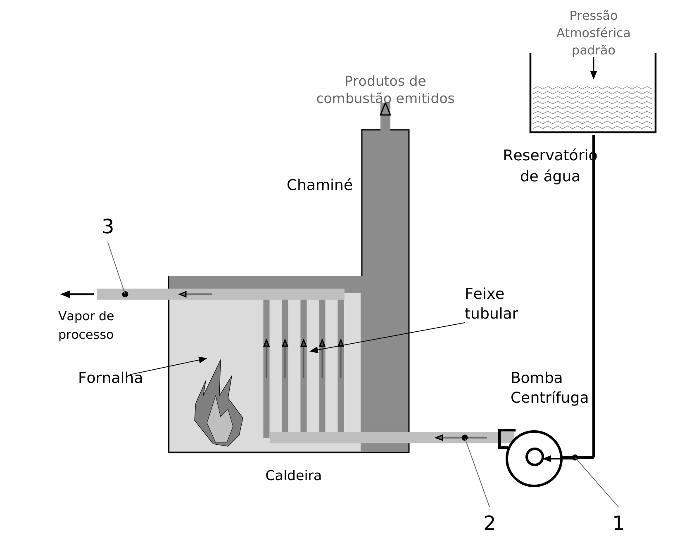
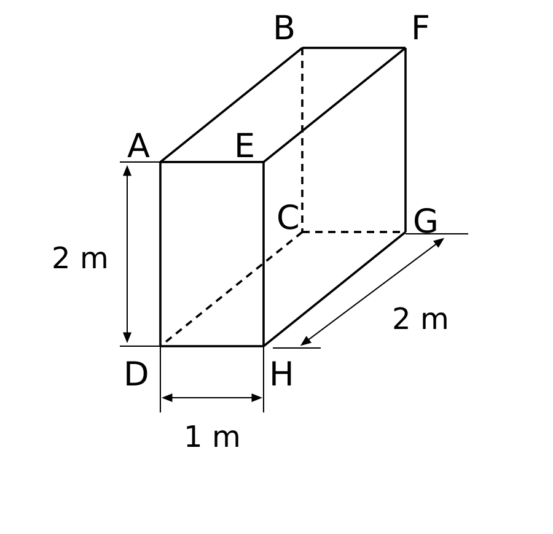

01. Alicerces e unidades
Uma perda constante de 90 W dura 10 min. Encontre energia e fluxo por 2 m².
Esta página abriu sem formatação porque o arquivo assets/curso.css não foi encontrado. Extraia a pasta inteira do curso (com as pastas assets e modulos) e abra o index.html de dentro dela.
Pular para o conteúdoE2 · Material de estudo
Calcule condução, convecção e radiação; interprete aletas, trocadores e isolamento de tubulações e envoltórias.
Calcule condução, convecção e radiação; interprete aletas, trocadores e isolamento de tubulações e envoltórias.
Use o balanço de energia de E1 como ponto de partida. A pergunta agora é quanto calor passa por segundo e quais resistências dificultam esse percurso. Comece pela parede plana, avance para convecção e radiação e só então combine os modelos em trocadores. Em cada conta, confira se o resultado pedido é energia, potência ou potência por área.
Trilha: entenda os alicerces, leia os exemplos e tente o diagnóstico antes dos bancos. São 30 exercícios da aula, 40 questões reais e 80 questões autorais no estilo Avalia, além de 21 flashcards.
Imagine uma sala pública em Fortaleza: o sol aquece a cobertura, o calor atravessa camadas e o ar-condicionado retira energia do ambiente. Não basta saber quanta energia poderia ser retirada. É preciso prever a velocidade da passagem, as temperaturas das superfícies e o tamanho do equipamento. Esse é o trabalho da transferência de calor.
Onde a energia começa e termina? Por qual material ou fluido ela passa? O corpo está mudando de temperatura com o tempo? Desenhe setas e nomeie os pontos. Uma seta representa a taxa que cruza uma fronteira; não representa um fluido atravessando necessariamente a parede.
Condução: interação microscópica, inclusive em fluidos parados. Convecção: difusão junto à superfície combinada com movimento do fluido. Radiação: emissão e absorção eletromagnética, inclusive no vácuo. Uma instalação pode reunir os três; a palavra “radiador” não determina sozinha o mecanismo dominante.
Faça a observação
Encoste mentalmente numa colher na panela: condução pela colher, convecção na água e no ar, radiação entre superfícies. Não toque em superfícies quentes para realizar essa observação.
Temperatura informa o estado térmico, não uma quantidade de calor armazenada. Calor é energia que atravessa uma fronteira por diferença de temperatura. Uma taxa mede energia por segundo; o fluxo mede essa taxa por área. Dois materiais à mesma temperatura podem parecer diferentes ao toque por retirarem energia da pele a taxas diferentes.
Energia e taxa
Taxa constante no intervalo. Para taxa variável, integre no tempo.
Símbolos: Q: J; Q̇: W = J/s; Δt: s.
Fluxo por área
Fluxo médio pela área indicada.
Símbolos: q″: W/m²; Q̇: W; A: m².
Exemplo resolvido — Potência, energia e fluxo
Um painel de 4 m² transmite 240 W durante 30 min.
Resolução: q″ = 240/4 = 60 W/m². Tempo = 1.800 s; energia = 240 × 1.800 = 432.000 J = 432 kJ. A mesma situação fornece três resultados diferentes, conforme o que foi pedido.
Permanente significa que a temperatura em cada ponto não varia no tempo; ela pode variar no espaço. Transitório significa que ainda existe armazenamento variável. Adiabático significa fluxo térmico nulo naquele contorno, não temperatura zero. Isotérmico significa temperatura constante no conjunto indicado, não ausência de qualquer troca.
O alicerce de E1 que você precisa é o balanço de energia. Para aquecer um corpo, use massa e calor específico; para mudança de fase, use calor latente. Para prever como a energia atravessa a instalação, combine o balanço com as leis de taxa deste módulo.
Balanço térmico
Declare a fronteira. A geração aqui é conversão de outra forma de energia em energia térmica.
Símbolos: Taxas: W; armazenamento pode existir mesmo sem escoamento de massa.
Aquecimento sensível
Calor específico constante, sem mudança de fase; a escolha de c depende do processo.
Símbolos: m: kg; cp: J/(kg·K); Q: J.
Mudança de fase
Mudança de fase a condições aproximadamente constantes; despreza aquecimento sensível adicional.
Símbolos: ṁ: kg/s; hfg: J/kg; Q̇: W.
Entre Sol e Terra, a energia atravessa o espaço por radiação. Em uma panela, a parede metálica conduz e a água pode circular por convecção. O manto terrestre apresenta movimento convectivo em escalas geológicas. Uma fogueira pode aquecer um observador a distância por radiação, enquanto o ar quente também se move. Em aletas de metal, condução ao longo do sólido alimenta a convecção para o ar. Escolher um mecanismo para uma região não exclui os outros em regiões distintas.
Roteiro autoral de aproximadamente oito minutos, para gravação: a história serve para motivar as perguntas físicas. O vídeo ainda não foi gravado; o texto abaixo já permite estudar a introdução.
Perguntas para verificar entendimento
Por que o ventilador pode acelerar o resfriamento? Por que o isolamento não “produz frio”? Por que o vácuo não elimina a radiação? Explique em palavras antes de avançar.
Converta comprimentos antes de elevar ao quadrado ou ao cubo. Um centímetro vale 0,01 m; portanto 1 cm² = 0,0001 m² e 1 cm³ = 0,000001 m³. Um milímetro vale 0,001 m. Minutos e horas precisam ser convertidos quando a taxa está em J/s; kW multiplicado por hora fornece kWh.
Temperatura absoluta
Use K nas potências, razões de temperaturas absolutas e propriedades que o exigem.
Símbolos: T: temperatura. A conversão soma um deslocamento; não multiplica.
Diferença de temperatura
Válida para diferenças; uma temperatura de 20 °C não é 20 K.
Símbolos: ΔT: temperatura final menos inicial ou diferença entre pontos definida no problema.
Áreas, volumes e dilatação linear
Área lateral do cilindro; acrescente as bases quando elas participarem da troca. Dilatação linear: coeficiente aproximadamente constante e expansão livre.
Símbolos: r,L: m; A: m²; V: m³. Na dilatação: αL em K⁻¹; L0 e ΔL em m; ΔT em K.
Exemplo resolvido — Raio não é diâmetro
Um tubo tem diâmetro externo de 80 mm e comprimento de 3 m. Use π ≈ 3,14.
Resolução: Raio = 40 mm = 0,04 m. Área lateral = 2πrL = πDL = 3,14 × 0,08 × 3 ≈ 0,754 m². Se o comprimento é axial, ele não é a espessura da parede.
Isole a incógnita por operações nos dois lados. Em Q̇ = ΔT/R, aumentar R reduz Q̇ se ΔT for fixo. ln é logaritmo natural: ln(ro/ri) exige um quociente sem unidade. A exponencial de resfriamento age sobre a diferença ao ambiente, não sobre o número em graus Celsius isoladamente.
Exemplo resolvido — Ler um gradiente
Ao longo de 0,20 m, uma parede cai de 70 para 30 °C. k = 0,5 W/(m·K).
Resolução: Gradiente médio = (30 − 70)/0,20 = −200 K/m. Fourier dá q″ = −0,5 × (−200) = +100 W/m² no eixo escolhido do quente para o frio.
dT/dx é a variação local por distância. ∂T/∂t é a mudança local por tempo. Você pode interpretar o significado dessas derivadas sem resolver equações diferenciais: a parede simples sem geração permite uma solução algébrica. Um integral soma contribuições variáveis; um k que muda com T exige essa soma ou um k médio adequadamente calculado.
Localize cotas, raio versus diâmetro, faces isoladas, setas das correntes, temperaturas do ar e da superfície, área de referência e coeficientes escritos no desenho. Uma face a 100 °C não é automaticamente ar a 100 °C. Se cinco faces são isoladas, a sexta é a única área de dissipação — não some as seis.
Checklist antes de substituir
O resultado é Q, Q̇, q″, T, h, U ou espessura? Os dados estão em unidades compatíveis? A figura revela algum dado que o texto não repete? Qual comprimento entra na correlação? Há geração, armazenamento ou mudança de fase?
Um aumento de temperatura normalmente amplia as dimensões de uma tubulação. Na dilatação linear livre, ΔL = αL L0 ΔT; o coeficiente αL de dilatação não é a difusividade térmica α = k/(ρc). Se apoios impedem o movimento, podem surgir esforços mecânicos. Juntas de expansão e arranjos flexíveis acomodam expansão e contração dentro dos limites do projeto.
Exemplo resolvido — Antes de escolher a junta
Tubo de 10 m com αL = 12×10⁻⁶ K⁻¹ aquece 50 K, podendo expandir livremente.
Resolução: ΔL = 12×10⁻⁶ × 10 × 50 = 0,006 m = 6 mm. Esse deslocamento não é a espessura do isolamento. O exemplo não dimensiona esforços ou uma junta real.
Em condições comuns, gases têm condutividade menor que líquidos; metais frequentemente apresentam condutividade muito maior. Isso não estabelece uma ordem absoluta para todos os sólidos, líquidos e gases: estrutura, composição, pressão e temperatura importam. A baixa densidade de gases ajuda a interpretar a tendência usual, mas densidade sozinha não determina k.
O coeficiente convectivo h depende de fluido, movimento, geometria e condições térmicas. Em situações usuais comparáveis, líquidos frequentemente apresentam h maior que gases. Não memorize uma comparação invertida como regra universal; para um cálculo específico, obtenha h pela correlação ou pelo dado do problema.
Transferência de calor descreve taxas e distribuições de temperatura. A termodinâmica identifica quanto pode ser trocado entre estados; aqui calculamos com que rapidez isso acontece. Taxa de calor Q̇ mede-se em W; fluxo q″ = Q̇/A mede-se em W/m². Calor específico c mede energia por massa e diferença de temperatura: J/(kg·K). Não confunda condutividade k, coeficiente convectivo h e coeficiente global U: representam fenômenos e modelos diferentes.
Condução decorre de interações microscópicas e pode ocorrer em sólidos e fluidos; convecção combina transporte no fluido em movimento com difusão junto à superfície; radiação é transferência eletromagnética e não exige meio material. As três formas podem coexistir. Uma parede recebe convecção do ar, conduz através das camadas e troca radiação com superfícies vizinhas. Antes da fórmula, desenhe o trajeto do calor e declare regime permanente ou transitório, geometria, geração e dependência das propriedades.
Como a Avalia cobra
Questões curtas costumam pedir a resistência dominante, o efeito de duplicar área/espessura, a unidade correta ou qual temperatura usar. Escreva as hipóteses antes da conta: paredes em série, área constante, condutividade uniforme e ausência de geração não valem automaticamente para qualquer equipamento.
Lei de Fourier em uma dimensão: Q̇ = −kA dT/dx. O sinal negativo representa fluxo no sentido de diminuição da temperatura. Em parede plana, regime permanente, k constante e sem geração: Q̇ = kA(T_quente − T_frio)/L. Resistência R_cond = L/(kA), em K/W. Em camadas em série, R_total = ΣR e a mesma taxa atravessa cada uma; a queda de temperatura de cada camada é Q̇R. Em caminhos paralelos, as taxas somam, enquanto a diferença de temperatura entre extremos é comum.
Condução radial em cilindro: R = ln(r₂/r₁)/(2πkL), com r₂ > r₁. A área aumenta com o raio, então usar L/(kA) com área escolhida arbitrariamente pode dar erro. Para esfera: R = (1/r₁ − 1/r₂)/(4πk). Somam-se resistências de cada casca e as resistências convectivas nas superfícies próprias. Contato imperfeito entre materiais e incrustação adicionam resistências; não são automaticamente nulos.
Raio crítico de isolamento decorre da competição entre aumento da resistência condutiva e aumento da área externa convectiva. No modelo simples com k e h constantes, r_crítico = k/h para cilindro e 2k/h para esfera. Abaixo dele, acrescentar uma camada fina pode aumentar a transferência; acima dele, o aumento reduz a taxa. Não significa que isolamento seja inútil: o resultado depende da geometria e não há o mesmo efeito em parede plana de área constante.
Exemplo resolvido — Parede composta
Uma parede de área 10 m² tem camada 1 com L = 0,10 m e k = 1 W/(m·K), e camada 2 com L = 0,05 m e k = 0,05 W/(m·K). Temperaturas superficiais diferem 22 K.
R₁ = 0,10/(1×10) = 0,01 K/W; R₂ = 0,05/(0,05×10) = 0,10 K/W. R_total = 0,11 K/W; Q̇ = 22/0,11 = 200 W. A segunda camada responde por 20 K da queda.
Lei de Newton: Q̇ = hA(T_s − T_∞). O coeficiente h tem unidade W/(m²·K) e depende do fluido, velocidade, geometria, regime e propriedades. Não é propriedade exclusivamente do material da parede. Resistência convectiva R_conv = 1/(hA). Convecção forçada usa ventilador, bomba ou movimento imposto; natural surge de empuxo associado à variação de densidade. Convecção mista reúne ambas.
Reynolds Re = ρVL/μ = VL/ν compara efeitos inerciais e viscosos. Nusselt Nu = hL/k_f relaciona convecção e condução no fluido. Prandtl Pr = ν/α = μc_p/k_f compara difusão de quantidade de movimento e térmica. Grashof Gr = gβΔTL³/ν² compara empuxo e viscosidade; Rayleigh Ra = GrPr. Use k_f do fluido em Nu, e não a condutividade da parede; escolha o comprimento característico indicado na correlação.
Em tubo circular longo, o diâmetro hidráulico é D; em seção não circular D_h = 4A/P_molhado. Re inferior a aproximadamente 2.300 favorece regime laminar no escoamento interno circular; transição depende das condições e turbulência é usual acima de cerca de 4.000. Esses números não classificam universalmente toda geometria externa. Para escoamento interno laminar plenamente desenvolvido, Nu = 3,66 sob temperatura superficial constante e Nu = 4,36 sob fluxo térmico constante, nas hipóteses clássicas. Para turbulento, correlações como Dittus-Boelter têm limites próprios de Re, Pr e desenvolvimento: Nu ≈ 0,023 Re^0,8 Pr^n, com n geralmente 0,4 no aquecimento e 0,3 no resfriamento do fluido.
Temperatura de filme (T_s + T_∞)/2 é frequentemente usada para avaliar propriedades de convecção externa, quando a correlação assim especifica. Em convecção natural, orientação e condições de superfície importam. Não extrapole uma correlação fora de sua faixa só porque ela produz um número. Em fervura e condensação, mudança de fase pode gerar coeficientes elevados; temperaturas de saturação e regime de ebulição devem ser considerados.
Pegadinha
Nu usa a condutividade do fluido. Re não tem unidade. Uma diferença de temperatura de 20 °C é de 20 K, mas as potências de T na radiação exigem temperaturas absolutas.
Para ler essas expressões: ρ é massa específica (kg/m³), V é velocidade (m/s), μ é viscosidade dinâmica (Pa·s), ν = μ/ρ é viscosidade cinemática (m²/s), α = k_f/(ρc_p) é difusividade térmica (m²/s), β é coeficiente de expansão volumétrica (K⁻¹) e g é aceleração da gravidade. L é o comprimento característico, escolhido conforme o modelo. A letra α reaparece na radiação com outro significado: absortividade. Leia o contexto e a unidade antes de substituir números.
Um corpo negro absorve toda radiação incidente e emite a máxima potência para uma temperatura: E_b = σT⁴, com σ ≈ 5,67×10⁻⁸ W/(m²·K⁴). Superfície real emite E = εσT⁴, 0 ≤ ε ≤ 1. Emissividade refere-se à emissão; absortividade α à absorção; refletividade ρ à reflexão; transmissividade τ à transmissão. α + ρ + τ = 1. Para superfície opaca, τ = 0. A igualdade entre emissividade e absortividade deve respeitar condições espectrais e de equilíbrio da lei de Kirchhoff; não autoriza igualar indiscriminadamente absorção solar e emissão infravermelha.
Uma pequena superfície cinza em um ambiente grande e aproximadamente negro, com visão completa do entorno e temperaturas uniformes, troca Q̇ = εσA(T_s⁴ − T_amb⁴). Temperaturas em K são indispensáveis. O meio não precisa ser ar: radiação pode ocorrer no vácuo. A taxa depende fortemente da temperatura e da geometria, não apenas da diferença T_s − T_amb.
Fator de forma F_ij é a fração da radiação que deixa i e alcança j diretamente, determinada pela geometria. A_i F_ij = A_j F_ji é a reciprocidade; Σ_j F_ij = 1 em um recinto fechado, incluindo auto-visão quando a superfície é côncava. Troca entre superfícies cinzentas exige considerar também resistências superficiais associadas à emissividade. Escudos radiativos reduzem a troca ao introduzir superfícies adicionais; acabamento polido e baixa emissividade pode reduzir perdas radiativas, mas não garante proteção contra convecção.
Aletas aumentam a área em contato com o fluido. Sua temperatura cai da base para a ponta quando o entorno está mais frio, por isso a área acrescida não trabalha toda na temperatura da base. Eficiência η_f = Q̇_real/[hA_f(T_base − T_∞)] é geralmente menor que 1. Efetividade ε_f = Q̇_com_aleta/Q̇_sem_aleta sobre a área de base avalia o ganho do uso da aleta; pode superar 1. Alta condutividade, seção adequada e bom contato ajudam; aletas são especialmente úteis no lado com menor h, como o ar de serpentinas.
Para aleta reta de seção uniforme, k e h constantes, modelo unidimensional e ponta adiabática: m = √(hP/(kA_c)), η_f = tanh(mL)/(mL) e Q̇_f = √(hPkA_c)(T_base − T_∞)tanh(mL). P é perímetro de troca, A_c seção de condução. Aleta mais longa aumenta área, mas tem eficiência decrescente e ganho que tende a saturar. Sujeira entre aletas pode reduzir vazão e desempenho.
Em aquecimento/resfriamento transitório, o modelo de capacitância concentrada trata o corpo com temperatura espacialmente uniforme quando Bi = hL_c/k_s < aproximadamente 0,1, usando L_c = volume/área externa. Sem geração e com propriedades constantes: (T(t) − T_∞)/(T_i − T_∞) = exp[−hAt/(ρVc)]. Fourier Fo = αt/L_c² caracteriza o tempo de difusão. Bi pequeno não significa transferência nula; significa pequena resistência interna em relação à externa.
Trocadores de casco e tubos separam fluidos por tubos e permitem arranjos variados; os de placas têm grande área por volume e podem oferecer boa transferência, mas exigem compatibilidade de pressão, vedação e limpeza; serpentinas tubulares aletadas trocam com o ar. Correntes paralelas seguem o mesmo sentido; contracorrentes, sentidos opostos; fluxo cruzado cruza as direções. Em troca sem perdas ao ambiente, Q̇ = ṁ_quente c_p,q(T_q,in − T_q,out) = ṁ_frio c_p,f(T_f,out − T_f,in), sem mudança de fase.
Coeficiente global U combina filmes convectivos, parede e incrustações. Em parede plana de mesma área: 1/U = 1/h_i + Σ(L/k) + R″_f,i + R″_f,o + 1/h_o. Em tubos, U depende da área de referência e é preciso converter áreas interna/externa. Incrustação aumenta resistência, reduz U e pode elevar perda de carga. A resistência global não é simplesmente a soma dos coeficientes h.
Método da diferença média logarítmica: Q̇ = UA F ΔT_lm, com ΔT_lm = (ΔT₁ − ΔT₂)/ln(ΔT₁/ΔT₂). Para contracorrente, ΔT₁ = T_q,in − T_f,out e ΔT₂ = T_q,out − T_f,in; para paralelo, pareie entradas e saídas do mesmo lado. Quando ΔT₁ = ΔT₂, use o limite igual a essa diferença, não 0/0. F corrige determinados arranjos de múltiplos passes e fluxo cruzado; não é sempre 1. LMTD é conveniente quando temperaturas terminais são conhecidas.
Método ε-NUT ajuda quando saídas são desconhecidas. C = ṁc_p, C_min é a menor capacidade térmica, C_r = C_min/C_max e NUT = UA/C_min. Q̇_max = C_min(T_q,in − T_f,in), ε = Q̇/Q̇_max. Para contracorrente com C_r ≠ 1: ε = [1 − exp(−NUT(1−C_r))]/[1 − C_r exp(−NUT(1−C_r))]; se C_r = 1, ε = NUT/(1+NUT). Para paralelo: ε = [1 − exp(−NUT(1+C_r))]/(1+C_r). A expressão depende do arranjo; não use a mesma fórmula para qualquer trocador. Em mudança de fase aproximadamente isotérmica, a capacidade térmica equivalente dessa corrente tende a infinito e C_r tende a zero.
Exemplo resolvido — Balanço de um trocador
Água fria entra a 20 °C com ṁ = 1 kg/s e c_p = 4 kJ/(kg·K), recebendo 80 kW.
C_frio = 4 kW/K; ΔT = 80/4 = 20 K; saída = 40 °C. Se C_min = 4 kW/K e a corrente quente entra a 60 °C, Q̇_max = 4×(60−20) = 160 kW; ε = 80/160 = 0,5.
Exemplo resolvido — Da diferença de temperatura à potência
Em um trocador ideal em contracorrente, já conhecemos as quatro temperaturas: quente 90 → 50 °C; fria 20 → 30 °C. As diferenças entre correntes na mesma extremidade são 90 − 30 = 60 K e 50 − 20 = 30 K.
Com ln 2 ≈ 0,693, ΔT_lm = (60 − 30)/ln(60/30) ≈ 43,29 K. Para UA = 0,10 kW/K e fator de correção igual a 1, Q̇ ≈ 4,33 kW. O resultado fica entre o que se obteria usando 30 K e 60 K.
Se as temperaturas de saída fossem desconhecidas, poderíamos usar ε–NUT. Por exemplo: contracorrente com C_quente = C_frio = 2 kW/K e UA = 2 kW/K dá C_r = 1, NUT = 1 e ε = 1/(1+1) = 0,50. Com entradas a 80 e 20 °C, Q̇ = 0,50 × 2 × 60 = 60 kW; ambas saem a 50 °C. São dados de outro trocador, escolhidos para ilustrar o segundo método.
Em água gelada, o isolamento tem duas funções distintas: reduzir ganho de calor e manter a superfície externa acima do ponto de orvalho do ar. Condensação superficial ocorre quando T_superfície fica abaixo do ponto de orvalho; umidade elevada aumenta esse risco. A barreira de vapor deve ser contínua no lado quente/úmido externo do isolamento frio, incluindo juntas, suportes e conexões. Se vapor entra e condensa dentro do isolante, a condutividade efetiva pode subir e a proteção se degradar.
Espessura deve ser calculada com temperatura do fluido, temperatura/umidade do ambiente, propriedades do isolante, coeficientes de troca e geometria. A mera aplicação de uma espessura usual não garante ausência de condensação. Pontes térmicas em suportes, compressão do isolante e falhas de vedação criam locais de baixa temperatura superficial. Em dutos, além do isolamento, importam vedação de juntas e controle de infiltração de ar úmido.
Transmitância térmica U da envoltória é inverso da resistência por área em modelo unidimensional, incluindo filmes superficiais. Q̇ = UAΔT descreve a parcela por diferença de temperatura; radiação solar, armazenamento térmico, ventilação e infiltração acrescentam efeitos na carga da edificação. A menor U reduz transmissão em condição comparável, mas não determina sozinha conforto térmico. Normas de desempenho e regulamentos energéticos devem ser consultados na edição aplicável ao projeto; aqui são ensinados os princípios, sem reprodução de tabelas normativas.
Decore
Parede plana: R = L/(kA); cilindro: R = ln(r₂/r₁)/(2πkL); convecção: R = 1/(hA); Q̇ = ΔT/R_total; radiação: εσA(T_s⁴−T_amb⁴); NUT = UA/C_min; condensação: T_s < T_orvalho.
Uma correlação de convecção é um modelo com domínio de validade: geometria, condição térmica da superfície, regime e intervalo de números adimensionais. Antes de calcular Nu, determine o comprimento característico e a velocidade pertinente. Propriedades avaliadas numa temperatura de referência devem seguir a correlação; usar propriedades do fluido frio numa parte e do quente em outra pode produzir uma combinação inconsistente.
Exemplo resolvido — Nu, h e área
Uma correlação aplicável ao caso fornece Nu = 50. Para k_fluido = 0,030 W/(m·K) e comprimento característico L = 0,10 m, h = Nu k/L = 15 W/(m²·K).
Uma superfície de 2 m², com diferença de 20 K, transfere Q̇ = hAΔT = 600 W. Nu é adimensional; k do fluido é diferente da condutividade do material da parede.
A taxa de capacidade térmica C = ṁc_p, em W/K ou kW/K, é a quantidade de potência necessária para mudar em um kelvin a temperatura do escoamento. Para um trocador sem perdas externas, Q̇ = C_quente(T_q,e − T_q,s) = C_frio(T_f,s − T_f,e). O menor C limita a troca máxima: Q̇_max = C_min(T_q,e − T_f,e). Não escolha C_min olhando apenas para a vazão: os calores específicos também importam.
Exemplo resolvido — Limite físico do trocador
Água quente com C_q = 2 kW/K entra a 80 °C; corrente fria com C_f = 4 kW/K entra a 20 °C. Q̇_max = 2 × 60 = 120 kW.
Se ε = 0,50, Q̇ = 60 kW. Saída quente = 80 − 60/2 = 50 °C; saída fria = 20 + 60/4 = 35 °C. Os dois balanços devem fornecer a mesma potência.
Um resultado acima de 120 kW seria incompatível com este modelo. Se houver mudança de fase numa corrente, trate adequadamente a temperatura praticamente constante e o modelo de capacidade.
Para água gelada, reduzir ganho de calor e evitar condensação são verificações relacionadas, mas diferentes. Condensação externa ocorre se a temperatura superficial fica abaixo do ponto de orvalho do ar. A barreira de vapor limita difusão de vapor para o interior do isolante; sua continuidade em juntas, suportes e válvulas é tão importante quanto a espessura. Um isolante molhado perde desempenho e pode favorecer corrosão sob isolamento.
Exemplo resolvido — Diagnóstico de condensação
Sala a 26 °C com ponto de orvalho informado de 18 °C; superfície do isolamento medida a 16 °C. A superfície está 2 K abaixo do ponto de orvalho: há condição para condensação.
Se a superfície for 20 °C nas mesmas condições, não há condensação externa por esse critério. A análise deve abranger condições de projeto e pontes térmicas, não apenas uma leitura isolada.
Diferencie água no exterior por condensação de vazamento na tubulação; inspecione posição da umidade, juntas e variação com operação.
Decore
Bi = hL_c/k_sólido compara resistência interna de condução e externa de convecção. Nu = hL/k_fluido caracteriza convecção. O símbolo k não representa o mesmo material nas duas expressões.
Estude os fundamentos indicados, acompanhe o exemplo e resolva o novo problema antes de abrir a resposta. Os casos desta oficina são autorais e não devem ser confundidos com enunciados oficiais de concursos.
Rever o fundamento desta aplicação
Para condução unidimensional permanente sem geração, o balanço em uma fatia dá d/dx(k dT/dx) = 0. Se k for constante, a segunda derivada de T é nula e o perfil na parede homogênea é linear. O fluxo permanece constante; a inclinação pode mudar entre materiais diferentes. Com geração volumétrica uniforme q‴ e k constante, d²T/dx² = −q‴/k e o perfil é parabólico.
Distingua temperaturas superficiais das temperaturas dos fluidos. Se as últimas forem dadas, inclua 1/(hA) de cada lado, além de L/(kA) das camadas. A queda em cada resistência é Q̇R e as temperaturas de interface devem seguir a direção da transferência. Contacto ou incrustação só podem ser ignorados quando o modelo autoriza.
Na parede com geração, não existe necessariamente a mesma taxa atravessando as duas faces. Para espessura 2L, faces à mesma T_s e simetria no centro: T(x) = T_s + q‴(L² − x²)/(2k), com x medido do centro. A simetria impõe dT/dx = 0 no centro e cada face recebe metade do calor gerado.
Exemplo resolvido — Filmes e duas camadas
A = 10 m²; ar a 40 e 20 °C; h_i = 10, h_o = 20 W/(m²·K); camadas (0,10 m; k = 1) e (0,05 m; k = 0,05 W/(m·K)). R_total = 0,010 + 0,010 + 0,100 + 0,005 = 0,125 K/W.
Q̇ = 20/0,125 = 160 W. Temperaturas no percurso: 40 → 38,4 °C (superfície interna) → 36,8 °C (interface) → 20,8 °C (superfície externa) → 20 °C. A soma das quedas é 20 K.
Uma placa de espessura total 0,020 m, k = 10 W/(m·K) e geração uniforme 2×10⁶ W/m³ tem as duas faces a 30 °C. Sem variação nas outras direções, encontre a temperatura central e o fluxo em cada face.
L = 0,010 m; T_c − T_s = q‴L²/(2k) = 10 K. T_c = 40 °C.
Cada face recebe q″ = q‴L = 20.000 W/m². Os fluxos apontam para lados opostos; o total por área do plano da placa é 40.000 W/m².
Rever o fundamento desta aplicação
Comece pela configuração: escoamento externo ou interno, natural ou forçado, comprimento característico, região de entrada ou plenamente desenvolvida e condição térmica. Calcule Re e Pr com propriedades compatíveis. Só depois selecione uma correlação que cubra essas hipóteses. Nu relaciona h à condutividade do fluido; ele não usa k da parede.
Para tubo circular, escoamento laminar plenamente desenvolvido, propriedades constantes: Nu = 3,66 com temperatura uniforme na parede e Nu = 4,36 com fluxo uniforme. A condição térmica altera o resultado mesmo com a mesma velocidade. Entrada térmica, seção diferente e propriedades variáveis podem exigir outra correlação.
Para tubo circular liso, fluxo turbulento desenvolvido e condições de uso da correlação, Dittus–Boelter aproxima Nu = 0,023 Re^0,8 Pr^n; n = 0,4 para aquecer o fluido e 0,3 para resfriá-lo. Não extrapole para tubo curto, laminar ou variação intensa de propriedades; um enunciado pode fornecer outra correlação. O efeito de aumentar velocidade depende dessa lei e do regime.
Exemplo resolvido — Mesma geometria, condição de parede diferente
Tubo longo de D = 0,020 m; k_f = 0,60 W/(m·K); escoamento laminar plenamente desenvolvido. Parede isotérmica: h = 3,66×0,60/0,020 = 109,8 W/(m²·K).
Fluxo uniforme: h = 4,36×0,60/0,020 = 130,8 W/(m²·K). Para diferença média de 10 K informada e área de 0,10 m², as taxas aproximadas são 109,8 W e 130,8 W.
Em tubo liso longo, uma questão fornece Dittus–Boelter aplicável, Re = 10⁵, Pr = 1, D = 0,050 m e k_f = 0,030 W/(m·K). Obtenha Nu e h. Se apenas a velocidade duplicar e o regime/propriedades se mantiverem, por qual fator h muda?
Nu = 0,023(10⁵)^0,8 = 230; h = 230×0,030/0,050 = 138 W/(m²·K).
Re dobra; h₂/h₁ = 2^0,8 ≈ 1,741. Logo h₂ ≈ 240,3 W/(m²·K), não o dobro.
Uma resistência representa dificuldade para uma mesma taxa, em K/W. Em série, a mesma taxa atravessa cada trecho sem geração; as quedas somam. Em paralelo, os extremos têm as mesmas temperaturas, e as taxas somam. Convecção e radiação da mesma superfície para ambientes à mesma temperatura são ramos paralelos; não são camadas em série.
Lei de Fourier
Condução local em uma dimensão. O fluxo acompanha a diminuição de T.
Símbolos: k: W/(m·K); gradiente: K/m; q″: W/m².
Resistência de parede
Mesmas hipóteses da parede plana.
Símbolos: R: K/W; L: m; k: W/(m·K); A: m².
Resistência por área
Não misture R″ e R ao somar resistências.
Símbolos: R″: m²·K/W; R: K/W.
Caminho em série
Permanente, sem geração ou desvio ao longo do caminho; mesma taxa em cada elemento.
Símbolos: R: K/W; temperaturas dos extremos definidos da rede.
Caminhos em paralelo
Mesmas temperaturas nos extremos de cada ramo; taxas de cada ramo somam.
Símbolos: R: K/W; não some resistências como se fossem camadas em série.
Temperatura de interface
Percurso do quente ao frio, sem geração no trecho.
Símbolos: Tj: K ou °C; Q̇R: diferença em K.
Exemplo resolvido — Películas e parede
Uma face é mantida a 90 °C. A parede tem L = 0,20 m e k = 1 W/(m·K); a outra face troca com ar a 30 °C, h = 10 W/(m²·K).
Resolução: Por área, R″ = 0,20/1 + 1/10 = 0,30 m²·K/W. q″ = (90 − 30)/0,30 = 200 W/m². Face externa = 30 + 200/10 = 50 °C. A película não pode ser omitida porque a temperatura de 30 °C é do ar.
Exemplo resolvido — Dois caminhos de fachada
6 m² têm U = 1 e 4 m² têm U = 3 W/(m²·K); ambos estão sob ΔT = 12 K.
Resolução: Taxa = 12(6 × 1 + 4 × 3) = 216 W. A média ponderada da transmitância é 18/10 = 1,8, não a média simples 2.
Na casca cilíndrica, A(r) = 2πrL. A taxa permanece a mesma em regime permanente sem geração, mas o fluxo por área muda com r. Por isso o perfil é logarítmico e a resistência contém ln(ro/ri). Na casca esférica, a área varia como r². Não substitua esses casos por uma parede plana com área arbitrária.
Condução radial em tubo
Casca cilíndrica, permanente, k constante e sem geração; despreza troca pelas pontas.
Símbolos: ro > ri: m; L: comprimento axial; R: K/W.
Condução radial em esfera
Casca esférica, permanente, k constante, sem geração.
Símbolos: ri,ro: m; R: K/W.
Perfil em casca cilíndrica
Sem geração, k constante. O perfil é logarítmico no raio.
Símbolos: ri ≤ r ≤ ro; T em K ou °C.
Contato imperfeito
Temperaturas imediatamente em cada lado do contato.
Símbolos: hc: W/(m²·K); Rc: K/W.
Raio crítico de isolamento
k do isolante e h externo constantes; convecção externa, sem radiação no modelo simples.
Símbolos: Raio externo crítico, em m; não é diretamente a espessura do isolante.
Exemplo resolvido — Raio e espessura críticos
Um fio de raio 1 mm usa isolante k = 0,03 W/(m·K) e h = 10 W/(m²·K).
Resolução: Raio crítico cilíndrico = k/h = 3 mm. Espessura até esse raio = 3 − 1 = 2 mm. Abaixo do ponto, o aumento de área externa pode superar a resistência acrescentada. Acima dele, a resistência domina. Radiação e h variável mudam o modelo.
Um valor global pode resumir camadas, mas depende de seus materiais. Para k variável na parede plana, integre k(T), ou use a média que representa esse integral; não use automaticamente k da face quente. Pontes e cantos podem exigir análise bidimensional; o caminho em paralelo é uma aproximação declarada.
Condutividade variável
Parede plana, permanente, sem geração, k depende somente de T.
Símbolos: k(T): W/(m·K); temperaturas nos limites do integral.
Exemplo resolvido — Integral simples
Entre 0 e 10 °C, k(T) = 2 + 0,02T W/(m·K); A/L = 5 m.
Resolução: Integral = [2T + 0,01T²]₀¹⁰ = 21 W/m. Taxa = 5 × 21 = 105 W. k médio = 21/10 = 2,1 W/(m·K).
Uma resistência elétrica converte energia elétrica em energia térmica. Geração por volume em W/m³ precisa ser multiplicada por volume para dar potência. Uma face adiabática não dissipa essa potência. Em regime permanente, a geração total deve sair pelas faces que efetivamente trocam calor.
Equação do calor
Sólido imóvel, sem termos de transporte por escoamento.
Símbolos: ρ: kg/m³; c: J/(kg·K); q̇g: W/m³.
Difusividade térmica
α indica rapidez de difusão; não é a absortividade da radiação.
Símbolos: α: m²/s; propriedades do corpo.
Geração volumétrica
Geração uniforme no volume considerado.
Símbolos: q̇g: W/m³; V: m³; Q̇g: W.
Geração com uma face livre
Permanente, somente uma face troca calor por convecção, demais adiabáticas, sem radiação.
Símbolos: A: área da face livre; Ts: temperatura superficial, não necessariamente a máxima interna.
Exemplo resolvido — Bloco com uma face livre
V = 0,02 m³; q̇g = 3.000 W/m³; face livre A = 0,10 m²; h = 20 W/(m²·K); ar a 28 °C.
Resolução: Potência = 60 W; condutância = 2 W/K; aumento superficial = 30 K. Ts = 58 °C. O interior pode ser mais quente; o balanço dessa face não determina sozinho Tmax.
Temperatura prescrita fixa T na face. Fluxo prescrito fixa q″; adiabática é o caso q″ = 0. Convecção relaciona o gradiente na face com h(Ts − T∞). Em radiação o contorno envolve potências de temperaturas absolutas. Uma condição inicial informa a temperatura antes da evolução, e não substitui os contornos.
Máximo em placa geradora
Placa simétrica de espessura total 2L, superfícies iguais, geração uniforme. Também vale para espessura L com uma face adiabática e outra em Ts.
Símbolos: L: distância do máximo à superfície que dissipa; k constante.
Máximo em cilindro maciço
Cilindro longo, radial, geração uniforme; superfície em Ts.
Símbolos: ro: raio externo; máximo no eixo; k constante.
Exemplo resolvido — Superfície versus máximo
Uma placa com espessura total 40 mm tem k = 4 W/(m·K), q̇g = 20.000 W/m³ e faces em 35 °C.
Resolução: L é metade: 0,020 m. Tmax − Ts = 20.000 × 0,020²/(2 × 4) = 1 K. Centro a 36 °C. Usar 40 mm nessa fórmula quadruplicaria indevidamente a elevação.
A região próxima à superfície tem gradientes de velocidade e temperatura: as camadas limites. O movimento transporta energia, e a difusão faz a passagem junto à interface. Advecção destaca o transporte pelo escoamento; convecção térmica de superfície combina esse transporte e difusão. h resume esse problema nas hipóteses escolhidas e não é uma propriedade exclusiva do metal.
Convecção de superfície
h médio compatível com a área; sinal positivo da superfície para o fluido.
Símbolos: h: W/(m²·K); T∞: fluido fora da camada limite.
Resistência convectiva
Temperaturas definidas entre superfície e fluido; use a área daquela superfície.
Símbolos: R: K/W; em tubo áreas interna e externa podem diferir.
Número de Nusselt
Comprimento e condutividade do fluido conforme a correlação.
Símbolos: Nu: adimensional; kf não é a condutividade da parede.
Número de Reynolds
Escolha velocidade e comprimento próprios da geometria.
Símbolos: μ: Pa·s; ν: m²/s; V: m/s; Re adimensional.
Número de Prandtl
Propriedades do mesmo fluido nas condições prescritas.
Símbolos: Pr adimensional; αf: difusividade térmica do fluido.
Diâmetro hidráulico
Ac é a seção de escoamento, Pm o perímetro molhado.
Símbolos: Dh: m; não confunda com área externa de troca.
Temperatura de filme
Use quando a correlação de convecção externa assim orientar.
Símbolos: Temperaturas na mesma escala; avalie as propriedades de forma coerente.
Exemplo resolvido — Escolha da dimensão
Um duto retangular de 0,20 × 0,30 m leva ar a 2 m/s, com ν = 1,5×10⁻⁵ m²/s.
Resolução: Ac = 0,06 m²; perímetro molhado = 1 m; Dh = 0,24 m. Re = 2 × 0,24/(1,5×10⁻⁵) = 32.000. Para obter h, ainda se precisa de uma correlação adequada ao duto e às condições térmicas.
Condições de entrada podem desenvolver perfis ao longo do tubo. “Desenvolvido” não significa temperatura numericamente igual em todos os pontos: significa formato de perfil estabelecido. Uma condição de fluxo uniforme é diferente de temperatura de parede uniforme. Declare se Nu é local ou médio; não use o valor médio desde a borda como valor local num ponto.
Tubo laminar desenvolvido
Tubo circular, laminar, desenvolvimento hidrodinâmico e térmico completo, propriedades constantes.
Símbolos: Valores médios clássicos; não universais para entrada ou seção não circular.
Dittus–Boelter
Tubo liso turbulento desenvolvido; usualmente Re ≥ 10⁴, 0,7 ≤ Pr ≤ 160 e L/D ≥ 10, pequenas variações de propriedades. n = 0,4 aquece o fluido; 0,3 resfria.
Símbolos: Re,Pr,Nu adimensionais; n depende do sentido da troca em relação ao fluido.
Placa plana externa
Média desde a borda; placa isotérmica, laminar, ReL abaixo da transição típica de 5×10⁵, aproximadamente 0,6 ≤ Pr ≤ 50.
Símbolos: L: comprimento na direção do escoamento; não largura transversal.
Exemplo resolvido — De Nu a potência
Uma correlação válida fornece Nu = 30 para kf = 0,032 W/(m·K) e L = 0,08 m. Área de 1,5 m², ΔT = 25 K.
Resolução: h = Nu kf/L = 12 W/(m²·K). Q̇ = 12 × 1,5 × 25 = 450 W. Nu não tem unidade; h tem. A escolha do k do fluido é indispensável.
Em convecção natural, aquecimento pode alterar a densidade e a gravidade gera empuxo. Orientação vertical/horizontal, face voltada para cima/baixo e comprimento característico mudam as correlações. No forçado, ventilador ou bomba impõe movimento. No misto, ambos podem competir.
Empuxo e convecção natural
Propriedades nas condições da correlação; β ≈ 1/T absoluta para gás ideal.
Símbolos: g: m/s²; β: K⁻¹; Ra,Gr adimensionais.
Convecção mista
Indicador da importância relativa do empuxo; orientação também importa.
Símbolos: Ri ≪ 1: tendência forçada; Ri ≫ 1: tendência natural; intermediário: mista.
Coeficiente na mudança de fase
Use um h próprio do regime de ebulição/condensação; h não é universal.
Símbolos: Tsat: temperatura de saturação à pressão local; diferença muda de sinal na condensação.
Na ebulição, aquecimento da superfície acima da saturação pode passar de convecção natural a ebulição nucleada, atingir fluxo crítico e evoluir para filme de vapor. O filme pode deteriorar a transferência. Na condensação, um filme líquido pode criar resistência; gotas podem apresentar coeficiente distinto. Um único h genérico não descreve todos esses regimes. Em exercícios, use a correlação ou o valor pertinente informado.
Exemplo resolvido — Calor sensível e latente
Um condensador transforma 0,02 kg/s de vapor saturado em líquido saturado; hfg = 2.000 kJ/kg.
Resolução: Taxa = 0,02 × 2.000 = 40 kW. Não é necessário atribuir uma variação de temperatura para representar esse calor latente. Se houver dessuperaquecimento ou sub-resfriamento, calcule etapas sensíveis adicionais.
Nusselt trata da troca convectiva, Reynolds da razão inércia/viscosidade, Prandtl das difusividades e Grashof/Rayleigh do empuxo térmico. Froude trata da comparação entre inércia e gravidade, por exemplo em escoamentos com superfície livre. Nenhum desses números, sozinho, representa universalmente condução, convecção e radiação em todos os problemas. Biot e Fourier pertencem a outras comparações: resistência interna/externa e difusão no tempo.
Emissão própria é energia que a superfície emite por unidade de área. Irradiação é o que chega. Radiosidade soma emissão e reflexão que deixam a superfície. Um corpo pode emitir muito e ainda ganhar energia se recebe mais do que sai. O vácuo elimina a necessidade de fluido para esse mecanismo; não elimina suportes que conduzem.
Emissão de corpo negro
Temperatura absoluta.
Símbolos: Eb: W/m²; σ ≈ 5,67×10⁻⁸ W/(m²·K⁴).
Emissão de superfície real
Emissividade total compatível com a temperatura e a faixa tratada.
Símbolos: 0 ≤ ε ≤ 1; E: W/m²; T: K.
Corpo pequeno em recinto grande
Pequena superfície cinza, visão completa de entorno aproximadamente negro e isotérmico; meio não participante.
Símbolos: T em K; Q̇ positivo do corpo ao entorno.
Destino da irradiação
Propriedades na mesma faixa espectral; em superfície opaca τr = 0.
Símbolos: α: absortividade; ρr: refletividade; τr: transmissividade; todos adimensionais.
Absorção de radiação incidente
G é a irradiação incidente; absortividade compatível com esse espectro.
Símbolos: G: W/m²; α solar não precisa igualar ε infravermelha.
Radiosidade de superfície opaca
Difusa, cinza, opaca, com igualdade apropriada entre absorção e emissão no modelo.
Símbolos: J: potência que deixa por área, emitida + refletida; G: incidente.
Saldo radiativo
Define saldo que deixa uma superfície.
Símbolos: J,G: W/m²; Q̇: W.
Exemplo resolvido — Emissão e perda líquida
Área de 1 m², ε = 0,8; σTs⁴ = 600 e σTamb⁴ = 450 W/m², corpo pequeno em entorno negro.
Resolução: Emissão própria = 0,8 × 600 = 480 W. Absorção do entorno = 0,8 × 450 = 360 W. Perda líquida = 120 W. Dizer que perde 480 W confundiria emissão com saldo.
Fator de forma descreve geometria, não emissividade. Em uma superfície plana ou convexa, a autovisão é zero; uma côncava pode ver a si mesma. A soma dos fatores de uma superfície em um recinto fechado é um. Reciprocidade precisa ponderar pelas áreas. Um material pode ser opaco numa faixa e transmitir em outra; “qualquer material” não é condição universal de transmissão radiativa.
Reciprocidade e fechamento
Recinto fechado; Fii pode ser não nulo em superfície côncava.
Símbolos: Fij: fração geométrica de i que chega diretamente a j.
Placas cinzas infinitas
Placas paralelas grandes, F12 ≈ 1, meio não participante, superfícies difusas cinzas opacas.
Símbolos: q″: W/m²; temperaturas absolutas.
Coeficiente radiativo equivalente
Corpo pequeno no entorno negro; esta fatoração é exata para as duas temperaturas escolhidas.
Símbolos: hr: W/(m²·K); T em K. Para valores próximos, hr ≈ 4εσTm³.
Exemplo resolvido — Reflexões em duas placas
Placas paralelas grandes têm ε1 = ε2 = 0,8. O numerador σ(T1⁴ − T2⁴) vale 300 W/m².
Resolução: Denominador = 1,25 + 1,25 − 1 = 1,5. Fluxo = 300/1,5 = 200 W/m². Multiplicar simplesmente as duas emissividades não contabiliza corretamente as reflexões.
Para duas superfícies que formam um recinto, a resistência radiativa inclui (1−ε1)/(A1ε1), o espaço 1/(A1F12) e (1−ε2)/(A2ε2). A taxa é σ(T1⁴−T2⁴) dividida pela soma desses termos. Em recintos com mais superfícies, resolva a rede de radiosidades; não aplique a fórmula de duas placas a qualquer geometria. Escudos acrescentam superfícies e resistências e podem reduzir a troca.
Lei de Kirchhoff e bandas
A relação entre absorção e emissão deve comparar a faixa espectral e as condições adequadas. A absortividade para radiação solar não precisa ser numericamente igual à emissividade no infravermelho térmico.
Um alto vácuo reduz fortemente a convecção gasosa, mas radiação continua entre superfícies e condução continua por suportes, cabos e contatos. Paredes muito frias não demonstram, sozinhas, que a radiação é maior que todas as outras trocas. Compare as taxas com áreas, temperaturas, emissividades e condutâncias. Uma alternativa oficial pode pressupor radiação predominante; preserve a distinção entre esse pressuposto e uma conclusão quantitativa demonstrada.
A aleta recebe energia pela base, conduz ao longo do sólido e dissipa lateralmente. A taxa axial diminui enquanto alimenta essa dissipação. É por isso que a temperatura cai na direção da ponta em uma aleta de resfriamento. A seção Ac e o perímetro P têm funções diferentes: Ac conduz; P troca calor lateralmente.
Parâmetro da aleta
Aleta reta de seção uniforme; propriedades e h constantes.
Símbolos: m: m⁻¹; P: perímetro de troca; Ac: seção de condução.
Aleta com ponta adiabática
Uma dimensão, base em Tb, ponta adiabática e seção uniforme.
Símbolos: L: comprimento da aleta; potência positiva no resfriamento.
Eficiência de aleta
Mesmas hipóteses da aleta uniforme com ponta adiabática.
Símbolos: ηf: razão calor real / calor se toda a aleta estivesse em Tb.
Perfil da aleta
Ponta adiabática, x medido da base; k,h e seção constantes.
Símbolos: 0 ≤ x ≤ L; as funções hiperbólicas são adimensionais.
Aleta muito longa
Limite mL grande; ponta praticamente na temperatura do ambiente.
Símbolos: Não use para qualquer comprimento; a taxa tende a saturar.
Exemplo resolvido — Ponta adiabática
Para mL = 0,5, a tabela do problema dá tanh(0,5) = 0,462.
Resolução: ηf = 0,462/0,5 = 0,924. Se hAfΔT = 50 W, aleta real = 46,2 W. A tabela evita exigir uma função hiperbólica não fornecida à calculadora.
Efetividade da aleta
Ab é a área da base que trocaria calor se a aleta não existisse.
Símbolos: εf pode superar 1; não é a mesma grandeza que eficiência ηf.
Conjunto de aletas
Base aproximadamente isotérmica; Af é área total das aletas; mesmo h no modelo.
Símbolos: Alivre exclui as áreas cobertas pelas bases das aletas.
A base sem aleta possui área pequena; uma aleta pode dissipar múltiplos dessa referência e ter efetividade maior que um. Já a eficiência compara com uma aleta ideal inteira à temperatura da base e é limitada por esse ideal. Em um conjunto, conte a área livre da base e a área das aletas ponderada por sua eficiência; não conte novamente a região ocupada pela base da aleta.
Exemplo resolvido — Conjunto aletado
Área livre = 0,5 m²; área total de aletas = 2 m²; ηf = 0,8; h = 15 W/(m²·K); ΔT = 10 K.
Resolução: Área efetiva = 0,5 + 0,8 × 2 = 2,1 m². Taxa = 15 × 2,1 × 10 = 315 W. Um mau contato pode aumentar a resistência de entrada; sujeira pode bloquear o ar, por isso a área geométrica sozinha não garante desempenho.
Um corpo pode armazenar energia enquanto troca com o ambiente. O modelo concentrado assume temperatura quase uniforme no corpo; valide com Bi usando condutividade do sólido. O comprimento V/A inclui somente as superfícies que participam da troca. Nusselt usa condutividade do fluido; Biot usa a do sólido.
Comprimento do modelo concentrado
A inclui todas as superfícies que trocam calor no modelo.
Símbolos: Lc: m; esfera inteira r/3; cilindro longo r/2.
Número de Biot
Bi < aproximadamente 0,1 favorece capacitância concentrada; análise de séries pode usar outro L característico.
Símbolos: ks: condutividade do sólido; não use kf do Nusselt.
Constante de tempo térmica
Temperatura interna uniforme, h e propriedades constantes.
Símbolos: τ: s; ρVc: capacidade térmica total J/K; hA: W/K.
Resfriamento concentrado
Sem geração, ambiente constante, modelo concentrado válido.
Símbolos: Ti: temperatura inicial uniforme; t: s.
Tempo para atingir uma temperatura
A razão deve estar entre zero e um no resfriamento/aquecimento monotônico.
Símbolos: t: s; não se chega exatamente ao ambiente em tempo finito no modelo.
Exemplo resolvido — Resfriamento até um alvo
Corpo com capacidade de 3.000 J/K, hA = 10 W/K, inicia a 70 °C em ar a 20 °C. Quanto tempo para 45 °C? Use ln 2 = 0,693; modelo concentrado válido.
Resolução: τ = 300 s. Razão térmica = (45 − 20)/(70 − 20) = 0,5. t = 300 ln 2 = 207,9 s. Tende ao ambiente assintoticamente; não chega exatamente a 20 °C em um tempo finito desse modelo.
Número de Fourier
L conforme o modelo transitório: raio ou meia espessura, por exemplo.
Símbolos: Fo: adimensional; αs: m²/s; t: s.
Corpo concentrado com geração
Geração constante e modelo concentrado; Teq = T∞ + Q̇g/(hA).
Símbolos: Temperaturas uniformes; τ = ρVc/(hA).
Superfície imposta em sólido semi-infinito
Sólido inicialmente em Ti; superfície passa instantaneamente a Ts constante. Profundidade ainda não sente a face oposta.
Símbolos: erf: função erro; forneça tabela/valor quando uma conta exigir avaliação numérica.
Com Bi elevado, considere T como função de posição e tempo. Para uma placa simétrica de meia espessura L em convecção, soluções em série usam raízes λn tan λn = Bi, com Bi = hL/k nessa formulação. A aproximação de um termo é aplicável depois de um tempo adimensional suficiente, usualmente Fo acima de aproximadamente 0,2. Gráficos de Heisler, coeficientes ou tabelas fornecidos pelo problema permitem a avaliação. Não transplante o Lc = V/A automaticamente para uma série que define L como meia espessura.
No sólido semi-infinito, compare a profundidade de penetração da ordem de √(αt) com a espessura disponível. Se a face oposta já influencia o campo, a hipótese falha. Em solução numérica unidimensional explícita com malha uniforme e sem geração, Fo da malha = αΔt/Δx² ≤ 1/2 é o critério clássico de estabilidade para pontos interiores. Esse Fo da malha é distinto de um Fo calculado com a espessura do corpo.
Casco e tubos permite fluidos separados pela parede tubular. Na flamotubular, gases quentes passam por tubos imersos na água. Um radiador combina convecção interna, condução na parede e convecção externa. Um regenerador recupera energia de uma corrente quente para aquecer outra; no Brayton, pode pré-aquecer o ar comprimido com a exaustão quando as temperaturas permitem.
No paralelo, as entradas ficam na mesma extremidade; no contracorrente, em extremidades opostas. No cruzado, as direções se cruzam. “Misturado” se refere à possibilidade de movimento e mistura transversal; aletas podem restringi-la. Compacto significa grande área de troca por volume, não necessariamente menor área total de troca.
Taxa de capacidade térmica
Calor sensível; não escolha Cmin apenas pela vazão.
Símbolos: C: W/K ou kW/K; unidades de cp compatíveis.
Balanço das correntes
Sem perda ao ambiente, sem trabalho, sem mudança de fase, propriedades médias adequadas.
Símbolos: Índices e: entrada; s: saída; q: quente; f: fria.
Coeficiente global em parede plana
Mesma área em todos os termos; permanente.
Símbolos: U: W/(m²·K); Rf″: m²·K/W.
Condutância global em tubo
UA é a condutância invariável sob mudança de área de referência.
Símbolos: UiAi = UoAo; Ai = 2πriL e Ao = 2πroL.
Exemplo resolvido — Área interna e externa
Um tubo tem Ao = 1,5Ai e Ui = 90 W/(m²·K).
Resolução: UiAi = UoAo dá Uo = 90/1,5 = 60 W/(m²·K). O U muda com a referência; UA não muda. Incrustação acrescenta resistência e pode elevar perda de carga; limpeza e avaliação consideram os dois efeitos.
Média logarítmica
Diferenças terminais entre correntes na mesma extremidade, ambas positivas; se iguais, use seu valor comum.
Símbolos: ΔTlm: K; pareamento depende do arranjo.
Taxa pelo método LMTD
F = 1 nos arranjos ideais simples; outros arranjos podem exigir correção.
Símbolos: F: adimensional, obtido para o arranjo especificado.
Desenhe as duas correntes e emparelhe temperaturas que estão na mesma extremidade física. Se uma corrente muda de fase isotermicamente, essa temperatura aparece nas duas extremidades. Se as diferenças são iguais, a média logarítmica é igual a elas. Se aparecer logaritmo de número não positivo, confira arranjo, dados e viabilidade antes de calcular.
Exemplo resolvido — Contracorrente
Entradas quente/fria 100/20 °C; saídas quente/fria 60/40 °C. UA = 0,20 kW/K; F = 1; ln(1,5) = 0,405.
Resolução: Diferenças terminais: 100 − 40 = 60 K e 60 − 20 = 40 K. ΔTlm = 20/0,405 ≈ 49,38 K. Taxa ≈ 9,88 kW. Não emparelhe entrada quente com entrada fria nesse contracorrente.
Limite e efetividade
Trocador sem fonte externa; 0 ≤ ε ≤ 1 no modelo passivo.
Símbolos: Cmin: menor taxa de capacidade térmica; Q̇max: W.
NUT e razão de capacidades
UA e C nas mesmas unidades; 0 ≤ Cr ≤ 1.
Símbolos: NUT e Cr: adimensionais.
Contracorrente ideal
Modelo ideal com propriedades constantes e sem perda ao ambiente.
Símbolos: Não aplique a expressão geral diretamente em Cr = 1, que exige o limite.
Paralelo ideal e mudança de fase
Primeira relação: paralelo. Segunda: uma corrente muda de fase isotermicamente, no modelo ideal.
Símbolos: Capacidade equivalente da corrente isotérmica tende a infinito, Cr tende a zero.
Exemplo resolvido — Verifique todas as saídas
Contracorrente, entradas 80 e 20 °C, Cq = Cf = 3 kW/K, UA = 6 kW/K.
Resolução: Cr = 1; NUT = 2; ε = 2/3. Q̇max = 3 × 60 = 180 kW; Q̇ = 120 kW. Quente sai a 80 − 120/3 = 40 °C; fria sai a 20 + 120/3 = 60 °C. A saída fria pode superar a saída quente no contracorrente: elas estão em extremidades diferentes. Nenhuma excede a entrada quente.
Não escolha Cmin só pela vazão; compare ṁcp. Na condensação ou ebulição isotérmica, a capacidade equivalente tende a infinito e Cr tende a zero. Para arranjos cruzados ou múltiplos passes, use a relação ou gráfico específico. Alterar o arranjo sem alterar a equação é uma fonte frequente de erro.
No ciclo de compressão de vapor, o compressor eleva a pressão do vapor; o condensador rejeita calor à vizinhança e pode condensar o refrigerante. Depois da expansão, o evaporador recebe calor do ambiente que se deseja resfriar e vaporiza o fluido. São funções diferentes. O condensador pode envolver dessuperaquecimento, condensação e sub-resfriamento, não apenas mudança de fase isotérmica.
Um elevado calor latente permite retirar mais energia por massa evaporada, nas condições correspondentes. Essa é uma vantagem térmica de refrigerantes como a amônia nas aplicações industriais consideradas; não torna vazamentos, manuseio ou descarte inofensivos e não determina sozinho a eficiência do ciclo. Para o balanço, distinga energia por massa e potência pela vazão.
Exemplo resolvido — Recuperar sem misturar
Ar comprimido entra em um trocador a 180 °C e gases de exaustão entram separados a 450 °C.
Resolução: Existe uma diferença térmica para pré-aquecer o ar antes da combustão, aproveitando energia da exaustão. Isso pode reduzir o calor fornecido na combustão para atingir o mesmo alvo. Se a exaustão estivesse mais fria que o ar, essa recuperação para aquecê-lo não seria viável nesse arranjo passivo.
Transmitância da envoltória
Modelo por área, unidimensional, permanente; não inclui toda a carga térmica da edificação.
Símbolos: Rsi″,Rse″: resistências superficiais; U: W/(m²·K).
Caminhos de parede em paralelo
Cada caminho tem o mesmo ΔT; ignora espalhamento bidimensional nas bordas.
Símbolos: Uj: transmitância do caminho; Aj: sua área.
Temperatura sol-ar simplificada
Modelo simplificado sem correção radiativa de onda longa; uso depende das hipóteses do problema.
Símbolos: αs: absortividade solar; Gs: W/m²; ho: W/(m²·K).
U representa transmissão nas hipóteses do modelo. A carga total do ambiente também considera sol, armazenamento, ocupantes, equipamentos, ventilação e infiltração. Uma menor U ajuda em condições comparáveis, mas não determina conforto sozinha. A estimativa sol-ar simplificada soma a contribuição solar absorvida e deve declarar a omissão de efeitos de onda longa.
Exemplo resolvido — Sol na cobertura
Ar a 32 °C; Gsolar = 500 W/m²; αs = 0,4; ho = 20 W/(m²·K).
Resolução: Tsa simplificada = 32 + 0,4 × 500/20 = 42 °C. Para a transmissão, use essa condição equivalente apenas se o modelo do problema o permitir. Um acabamento claro pode alterar a absorção, sem alterar automaticamente a condutividade da parede.
Superfície sem condensação
Verifique o ponto mais frio, incluindo suportes e juntas; margem de projeto pode ser necessária.
Símbolos: T de superfície externa; Td depende da temperatura e umidade do ar.
Em tubulações frias, há duas verificações: ganho de calor e temperatura externa em relação ao ponto de orvalho. A barreira de vapor deve ser contínua do lado externo quente/úmido. Suportes e juntas podem criar pontes térmicas mesmo quando o trecho reto está adequado. A umidade dentro do isolamento pode elevar sua condutividade e degradar a proteção.
Exemplo resolvido — Cheque cada ponto
Ar com ponto de orvalho de 20 °C. Revestimento a 23 °C e suporte metálico a 18 °C.
Resolução: O revestimento está acima do ponto de orvalho, mas o suporte apresenta risco. A inspeção não pode usar só uma média da linha. Correção exige tratar a ponte térmica e a continuidade da barreira, não apenas aumentar espessura de um trecho distante.
Energia evitada e custo didático
Taxa e preço constantes; carga térmica evitada não equivale automaticamente a consumo elétrico evitado.
Símbolos: Se usar kW e h, ΔE sai em kWh; p: preço por kWh do caso hipotético.
Uma redução de carga térmica não é automaticamente a mesma redução de energia elétrica. Relacione carga, tempo de operação e desempenho do sistema. Valores econômicos usados em exercícios são hipóteses didáticas, e uma escolha real precisa de dados locais.
Preparação para a SOP-CE
Os contextos de edificações são aplicações didáticas coerentes com o trabalho de Engenharia Mecânica. O programa comparável de Porto Alegre/Avalia e as provas anteriores orientam a seleção. Nas fontes oficiais da SOP consultadas em 13/10/2026 não foi localizado um programa definitivo para o concurso projetado; a publicação deste curso não garante 99% de uma prova futura. O mapa abaixo mede preparação para os itens presentes e deve ser confrontado com o edital aplicável.
O mapa liga os 150 exercícios às explicações necessárias. Antes de responder, explique a hipótese e escolha a equação sem consultar o gabarito. Acertar por reconhecimento da alternativa não substitui resolver uma variação com outros números.
Diagnóstico: resolva os 20 comandos abaixo em papel. Em caso de erro, revise o assunto indicado, refaça o exemplo e tente um exercício novo. Use o formulário para lembrar relações e confira suas condições de uso.
Uma perda constante de 90 W dura 10 min. Encontre energia e fluxo por 2 m².
Explique por que permanente não significa temperatura uniforme.
Permanente significa temperatura sem mudança no tempo em cada ponto. Pode haver um gradiente espacial constante sustentando condução.
Parede: k = 0,6, A = 5 m², L = 0,15 m, superfícies separadas por 20 K. Unidades de k em W/(m·K).
Q̇ = 0,6 × 5 × 20/0,15 = 400 W. Fluxo = 80 W/m². As temperaturas são de superfície: não acrescente películas não informadas.
Dois ramos têm R = 0,1 e 0,2 K/W, entre os mesmos extremos separados por 10 K.
Q̇ = 10/0,1 + 10/0,2 = 150 W. Somar as resistências daria uma rede em série diferente da informada.
Tubo: ri = 0,02 m, ro = 0,04 m, L = 2 m, k = 0,1 W/(m·K). Use ln 2 = 0,693 e π = 3,14. Encontre R.
R = 0,693/(2 × 3,14 × 0,1 × 2) ≈ 0,552 K/W. O logaritmo usa o quociente dos raios.
Isolante cilíndrico: k = 0,04 e h = 8, em SI. O raio original é 2 mm. Qual raio crítico e qual espessura até ele?
rc = k/h = 0,005 m = 5 mm. Espessura = 5 − 2 = 3 mm, no modelo com h constante e sem radiação.
Um volume de 0,03 m³ gera 2.000 W/m³. Somente 0,2 m² dissipam por convecção, h = 15, ar a 20 °C. Determine Ts em regime permanente.
Geração = 60 W. Ts − 20 = 60/(15 × 0,2) = 20 K. Ts = 40 °C; esse balanço não é uma determinação de Tmax interior.
Uma face isolada tem temperatura necessariamente nula?
Não. Isolada impõe fluxo normal nulo, não temperatura nula. Um gradiente normal nulo com k finito satisfaz o contorno adiabático.
Nu = 20, kf = 0,03 W/(m·K), L = 0,06 m. Encontre h.
h = Nu kf/L = 10 W/(m²·K). Nu é adimensional; kf é do fluido.
Compare Re, Pr e Nu em palavras.
Re compara inércia e viscosidade; Pr compara difusividade de momento e térmica; Nu representa a troca convectiva em relação à condução no fluido. Não são sinônimos.
ε = 0,6 e emissão de corpo negro de 700 W/m². Determine emissão real; pode chamá-la de saldo?
Emissão real = 420 W/m². Não é o saldo sem conhecer a energia absorvida da irradiação incidente.
Superfície A1 = 2 m², F12 = 0,3, A2 = 3 m². Determine F21.
Reciprocidade: 2 × 0,3 = 3F21; F21 = 0,2. Não assuma F12 = F21 para áreas diferentes.
Uma aleta transfere 24 W; toda a sua área na temperatura da base transferiria 30 W. Encontre eficiência.
η = 24/30 = 0,8. A referência da efetividade seria a área da base ocupada sem a aleta, não os mesmos 30 W.
Com mL = 1 e tanh(1) = 0,762, determine η para ponta adiabática.
η = tanh(mL)/(mL) = 0,762. A fórmula exige seção e propriedades constantes e as hipóteses do modelo de aleta.
k = 20, h = 40 e V/As = 0,01, em SI. Avalie Bi e o modelo concentrado.
Bi = hLc/k = 0,02. É menor que 0,1, critério usual para aproximar temperatura interna uniforme.
Um corpo começa a 80 °C, ambiente a 20 °C. Quando e^(−t/τ) = 0,25, qual temperatura?
T = 20 + (80 − 20) × 0,25 = 35 °C. O fator multiplica a diferença ao ambiente.
Cquente = 3 e Cfrio = 2 kW/K; entradas 90 e 30 °C. Encontre Qmáx; para ε = 0,5, encontre Q̇.
Cmín = 2 kW/K. Qmáx = 2 × 60 = 120 kW. Q̇ = 60 kW. C não é vazão mássica: C = ṁcp.
No mesmo equipamento, acrescenta-se incrustação sem alterar as demais resistências. Qual efeito sobre U?
A resistência cresce e U diminui na mesma área de referência. Para mesma potência e mesmos terminais, seria necessária maior área ou outra mudança compensatória.
6 m² de parede têm U = 1; 2 m² de janela têm U = 3. Para ΔT = 15 K, encontre a taxa.
Q̇ = (6 × 1 + 2 × 3) × 15 = 180 W. Essa é somente a parcela de transmissão informada.
Superfície a 17 °C, ponto de orvalho a 19 °C. Avalie o risco; a temperatura do ar basta para decidir?
A superfície está abaixo do ponto de orvalho e pode condensar. A decisão depende da umidade e da temperatura superficial; a temperatura do ar sozinha não basta.
Questões autorais para treinar conceitos e padrões de cobrança. Não são questões de prova oficial.
Estudar a base: Teoria deste assunto · Unidades e leitura das figuras
Qual mecanismo permite transferência térmica através do vácuo?
Radiação transfere energia por ondas eletromagnéticas, sem exigir meio material. Condução e convecção dependem de interações materiais ou de um fluido.
Estudar a base: Teoria deste assunto · Unidades e leitura das figuras
Uma parede plana tem k = 0,5 W/(m·K), A = 2 m², L = 0,1 m e ΔT = 20 K. Qual taxa de condução permanente?
Q̇ = kAΔT/L = 0,5×2×20/0,1 = 200 W. A taxa depende da diferença entre temperaturas superficiais e das hipóteses de condução plana.
Estudar a base: Teoria deste assunto · Unidades e leitura das figuras
Duas camadas em série, em regime permanente e sem geração de calor, têm resistências 0,1 e 0,2 K/W. Entre as faces extremas há 30 K. Qual taxa atravessa ambas?
Camadas em série somam resistências: R = 0,3 K/W. Q̇ = 30/0,3 = 100 W; a taxa é a mesma em cada camada, sem geração e em regime permanente.
Estudar a base: Teoria deste assunto · Unidades e leitura das figuras
Uma camada plana é duplicada em espessura, mantendo área, condutividade e temperaturas nas faces. Qual efeito?
R = L/(kA) é proporcional à espessura e Q̇ = ΔT/R. Como as demais grandezas permanecem fixas, duplicar L reduz a taxa à metade.
Estudar a base: Teoria deste assunto · Unidades e leitura das figuras
Sobre condução e resistência térmica, assinale a alternativa INCORRETA.
A resistência radial de um cilindro usa ln(r₂/r₁)/(2πkL). A área depende do raio, por isso a fórmula plana não é a expressão exata geral para essa geometria.
Estudar a base: Teoria deste assunto · Unidades e leitura das figuras
Uma superfície de 2 m² está a 50 °C em ar a 30 °C. Use h = 10 W/(m²·K). Qual taxa convectiva?
Q̇ = hAΔT = 10×2×20 = 400 W. Diferença de 20 °C equivale a 20 K; não se soma 273,15 à diferença.
Estudar a base: Teoria deste assunto · Unidades e leitura das figuras
O número de Nusselt Nu = hL/k emprega qual condutividade?
Nusselt compara transporte convectivo ao condutivo no fluido. Sua definição usa k do fluido e comprimento característico coerente com a correlação.
Estudar a base: Teoria deste assunto · Unidades e leitura das figuras
A circulação de ar induzida por diferença de densidade junto a uma superfície quente caracteriza:
A variação de densidade e o empuxo movem o fluido sem ventilador imposto. Convecção forçada tem movimento provocado por um equipamento ou agente externo.
Estudar a base: Teoria deste assunto · Unidades e leitura das figuras
Na figura das duas camadas planas, sem geração e em regime permanente, qual relação está correta?
O balanço de energia exige que a taxa que entra em uma camada seja a que sai, pois não há acumulação nem geração. As quedas de temperatura dependem das resistências.
Estudar a base: Teoria deste assunto · Unidades e leitura das figuras
Um isolante cilíndrico tem k = 0,05 W/(m·K) e h = 5 W/(m²·K). Qual raio crítico no modelo simplificado?
r_crítico = k/h = 0,05/5 = 0,01 m, ou 10 mm. Trata-se de raio externo, não de espessura crítica universal.
Estudar a base: Teoria deste assunto · Unidades e leitura das figuras
Qual afirmação sobre emissividade é adequada?
Emissividade relaciona emissão da superfície e emissão negra à mesma temperatura, com valores de 0 a 1. Não equivale a condutividade nem ao fator de forma.
Estudar a base: Teoria deste assunto · Unidades e leitura das figuras
Um corpo negro dobra sua temperatura absoluta, mantendo a área. Sua potência total emitida passa a ser:
A emissão negra é proporcional a T⁴. Ao dobrar T em kelvin, a razão é 2⁴ = 16. A questão trata de emissão, não de troca líquida com ambiente variável.
Estudar a base: Teoria deste assunto · Unidades e leitura das figuras
Julgue: I — radiação exige ar; II — para uma superfície opaca α + ρ = 1; III — a reciprocidade é A_iF_ij = A_jF_ji. Quais são corretas?
A radiação não exige ar e pode atravessar vácuo. Em superfície opaca a transmissividade é nula; a reciprocidade pondera os fatores de forma pelas áreas.
Estudar a base: Teoria deste assunto · Unidades e leitura das figuras
Aletas são adicionadas ao lado do ar de uma serpentina principalmente para:
A maior área compensa a resistência convectiva elevada no lado do ar. O ganho real depende da eficiência das aletas, do contato e da vazão de ar.
Estudar a base: Teoria deste assunto · Unidades e leitura das figuras
Uma aleta transfere 80 W; se toda sua área estivesse à temperatura da base, transferiria 100 W. Qual eficiência?
η_f = Q̇_real/Q̇_ideal = 80/100 = 0,80. Não confunda essa eficiência com efetividade relativa à superfície sem aleta.
Estudar a base: Teoria deste assunto · Unidades e leitura das figuras
Um corpo tem h = 10 W/(m²·K), L_c = 0,01 m e k = 10 W/(m·K). Qual Biot e adequação usual do modelo concentrado?
Bi = hL_c/k = 10×0,01/10 = 0,01. A resistência interna é pequena frente à externa, favorecendo temperatura quase uniforme no corpo.
Estudar a base: Teoria deste assunto · Unidades e leitura das figuras
Água com vazão 2 kg/s e c_p = 4 kJ/(kg·K) aquece 5 K em um trocador. Qual potência recebida?
Q̇ = ṁc_pΔT = 2×4×5 = 40 kJ/s = 40 kW. A fórmula supõe aquecimento sensível sem mudança de fase.
Estudar a base: Teoria deste assunto · Unidades e leitura das figuras
Julgue: I — incrustação aumenta a resistência térmica; II — U aumenta sempre quando há incrustação; III — U deve indicar sua área de referência em tubos. Qual sequência é correta?
A camada de incrustação adiciona resistência e reduz U nas mesmas condições. Em geometria tubular as áreas interna e externa diferem, exigindo referência coerente.
Estudar a base: Teoria deste assunto · Unidades e leitura das figuras
As duas diferenças terminais de um trocador ideal valem 20 K. Qual ΔT_lm?
Quando as diferenças terminais são iguais, o limite da expressão logarítmica é o próprio valor comum. Não se deve tratar o resultado intermediário 0/0 como zero.
Estudar a base: Teoria deste assunto · Unidades e leitura das figuras
Um trocador tem UA = 2 kW/K e C_min = 1 kW/K. Qual NUT?
NUT = UA/C_min = 2/1 = 2, adimensional. A efetividade depende também de C_r e do arranjo, não apenas de NUT.
Estudar a base: Teoria deste assunto · Unidades e leitura das figuras
Um contracorrente tem C_r = 1 e NUT = 3. Qual efetividade ideal?
Para C_r = 1 em contracorrente, ε = NUT/(1+NUT) = 3/4 = 0,75. Usar a expressão de paralelo daria outro resultado.
Estudar a base: Teoria deste assunto · Unidades e leitura das figuras
Há risco de condensação na superfície externa de um tubo de água gelada quando:
O ponto de orvalho indica a temperatura de saturação da umidade presente no ar. Se a superfície estiver mais fria, o vapor pode condensar nela.
Estudar a base: Teoria deste assunto · Unidades e leitura das figuras
Em isolamento de tubulação fria em ar quente e úmido, onde deve ficar a barreira de vapor contínua?
A barreira impede ingresso de vapor do ambiente para a região fria. Juntas, suportes e conexões também precisam de continuidade; só revestir trechos retos não basta.
Estudar a base: Teoria deste assunto · Unidades e leitura das figuras
Qual grandeza representa a transmitância térmica por área de uma parede composta no modelo estacionário?
A transmitância reúne as resistências de películas e camadas por área e tem unidade W/(m²·K). A taxa total usa Q̇ = UAΔT.
Estudar a base: Teoria deste assunto · Unidades e leitura das figuras
Sobre trocadores e envoltória, assinale a alternativa INCORRETA.
Esta é a afirmação incorreta: conforto e carga térmica dependem também de radiação solar, ventilação, umidade, ganhos internos e armazenamento, além da transmitância.
Estudar a base: Teoria deste assunto · Unidades e leitura das figuras
Nu=50, k do fluido=0,030 W/(m·K), L=0,10 m. Qual h?
Nu=hL/k, portanto h=Nu k/L=50×0,030/0,10=15. Verifique que k pertence ao fluido nesta definição. Nu não tem unidade, enquanto h multiplica área e diferença de temperatura na lei de resfriamento de Newton.
Estudar a base: Teoria deste assunto · Unidades e leitura das figuras
C_quente=2 kW/K e C_frio=4 kW/K; entradas 80 e 20 °C. Para ε=0,50, a potência trocada é:
Q_max=C_minΔT_entradas=2×60=120 kW. Efetividade é Q/Q_max, portanto Q=0,50×120=60 kW. C não é calor específico isolado; contém vazão mássica e define quanto cada corrente muda de temperatura.
Estudar a base: Teoria deste assunto · Unidades e leitura das figuras
Um trocador retira 60 kW de uma corrente quente com taxa de capacidade térmica de 2 kW/K, que entra a 80 °C e não muda de fase. A temperatura de saída quente vale:
ΔT_quente=Q/C=60/2=30 K e T_saída=80−30=50 °C. Temperaturas de saída devem ser calculadas separadamente para cada corrente. Igualar ambas sem fundamento viola o balanço quando suas capacidades térmicas diferem.
Estudar a base: Teoria deste assunto · Unidades e leitura das figuras
Ar com ponto de orvalho de 18 °C envolve um tubo isolado cuja superfície externa está a 16 °C. Qual diagnóstico?
A superfície está abaixo do ponto de orvalho, favorecendo condensação do vapor presente no ar. Temperatura do ar isolada não define esse limite. Espessura, continuidade da barreira de vapor e pontes térmicas devem ser examinadas no sistema.
Estudar a base: Teoria deste assunto · Unidades e leitura das figuras
Assinale a INCORRETA sobre a seleção de modelos de transferência de calor.
Correlações têm geometria, condições de contorno e intervalos de validade. Transferir uma correlação de placa para tubo, ou de regime turbulento para laminar sem justificativa, pode alterar substancialmente o resultado mesmo com conta aritmética correta.
40 questões · 12 cadernos · Cebraspe, FGV e Instituto Avalia · gabaritos definitivos
Os itens CR-01 a CR-17 trazem o enunciado e as figuras incorporados do caderno fornecido para o curso. Nos demais, abra o PDF indicado para ler o texto integral, todas as alternativas e as figuras; a página está indicada em cada item. Os 24 PDFs de provas e gabaritos estão disponíveis localmente e também no pacote abaixo.
Leia a prova antes de marcar a resposta. A resolução é autoral e usa o gabarito definitivo. As notas sobre limitações de enunciado dos itens CR-05 e CR-16 foram preservadas; estude a ressalva junto com a alternativa oficial. O placar registra acertos sem penalidade e não simula as regras do futuro edital.
Baixar os 24 PDFs (ZIP) · Índice de fontes, números e páginas
| Caderno | Banca | Números originais | Arquivos completos |
|---|---|---|---|
| CAESB · Engenheiro Mecânico | Cebraspe | 38 | Prova completa · Gabarito definitivo |
| INPE · Tecnologista Júnior — TG15, tipo 1 | FGV | 25, 30, 36 | Prova completa · Gabarito definitivo |
| Petrobras · Engenharia de Equipamentos — Mecânica | Cebraspe | 100, 101, 102 | Prova completa · Gabarito definitivo |
| Petrobras · Engenharia de Processamento | Cebraspe | 100, 101, 102, 104, 105, 106, 107, 108 | Prova completa · Gabarito definitivo |
| Petrobras · Técnico — Operação (2023.1) | Cebraspe | 82, 84 | Prova completa · Gabarito definitivo |
| Petrobras · Técnico — Operação (2023.2) | Cebraspe | 85, 90 | Prova completa · Gabarito definitivo |
| Porto Alegre · Engenheiro Mecânico · tipo 01 | Instituto Avalia | 39 | Prova completa · Gabarito definitivo |
| SAD/SED/MS · Docente Física · tipo 01 | Instituto Avalia | 23, 19 | Prova completa · Gabarito definitivo |
| TBG · caderno 888_TBG_016_01 | Cebraspe | 66, 67, 68, 69, 70 | Prova completa · Gabarito definitivo |
| TBG · Engenheiro Júnior — Operações | Cebraspe | 93, 100, 88, 91, 94, 95, 89, 90, 92 | Prova completa · Gabarito definitivo |
| TRF6 · Analista — Engenharia Mecânica | Cebraspe | 65, 66, 67 | Prova completa · Gabarito definitivo |
| Justiça Eleitoral (TSE/CPNUJE) · Engenharia Mecânica | Cebraspe | 70 | Prova completa · Gabarito definitivo |
Porto Alegre é uma prova da Avalia para Engenheiro Mecânico. Os dois itens de Física da SED/MS são apoio aos alicerces e vêm de outra carreira.
Nenhuma questão corresponde aos filtros. Altere o assunto ou a busca.
Trocadores e incrustação · Certo/Errado
Estudar a base: Teoria deste assunto · Unidades e leitura das figuras
Em relação aos trocadores de calor, julgue os itens subsequentes.
93 Os trocadores de calor de contracorrente podem ser utilizados como regeneradores para aquecer o ar de alta pressão que sai do compressor.
Gabarito definitivo: C — Certo.
Em uma turbina a gás com regeneração, a exaustão da turbina pode ceder calor ao ar comprimido antes da combustão. Isso exige que a exaustão esteja mais quente que esse ar. O trocador em contracorrente mantém uma diferença de temperatura favorável ao longo de sua extensão.
Leve para a prova: Recuperação de calor exige uma fonte efetivamente mais quente que o fluido a aquecer.
Caderno completo · original 93 · p. 4 · Gabarito definitivo
Prova original · p. 4 · Gabarito definitivo · Caderno fornecido (questão na p. 18)
Trocadores e incrustação · Certo/Errado
Estudar a base: Teoria deste assunto · Unidades e leitura das figuras
Julgue os próximos itens, referentes ao ciclo Brayton.
100 A característica regenerativa do ciclo Brayton consiste na utilização dos gases de exaustão para preaquecer o ar que entra na câmara de combustão.
Gabarito definitivo: C — Certo.
O regenerador reaproveita parte do calor que seria descartado com os gases. Quando existe diferença de temperatura adequada, o ar entra mais quente na combustão e precisa de menos combustível para atingir a temperatura desejada. O equipamento real também introduz perdas de pressão.
Leve para a prova: Regeneração economiza calor fornecido, respeitando os limites térmicos e as perdas do trocador.
Caderno completo · original 100 · p. 4 · Gabarito definitivo
Prova original · p. 4 · Gabarito definitivo · Caderno fornecido (questão na p. 20)
Trocadores e incrustação · Certo/Errado
Estudar a base: Teoria deste assunto · Unidades e leitura das figuras
Em relação a bombas centrífugas e alternativas e a permutadores de casco/tubo, julgue os itens seguintes.
82 O princípio do funcionamento de um permutador de casco/tubo diz respeito a aproveitar a diferença de temperatura entre dois fluidos que, ao se misturarem, atingem a temperatura desejada.
Gabarito definitivo: E — Errado.
Um fluido circula dentro dos tubos e o outro pelo casco. A parede dos tubos separa os fluidos: há convecção em cada lado e condução através da parede. Mistura pode ocorrer em um equipamento de contato direto; em casco e tubos, normalmente indica vazamento.
Leve para a prova: Desenhe os dois caminhos de escoamento e a parede que os separa.
Caderno completo · original 82 · p. 4 · Gabarito definitivo
Prova original · p. 4 · Gabarito definitivo · Caderno fornecido (questão na p. 11)
Alicerces e unidades · Certo/Errado
Estudar a base: Teoria deste assunto · Unidades e leitura das figuras
No que se refere a tubulações industriais, válvulas e acessórios, julgue os itens que se seguem.
84 Juntas de expansão são acessórios utilizados para permitir a expansão e contração térmica das tubulações industriais sem causar danos à estrutura.
Gabarito definitivo: C — Certo.
Ao aquecer, uma tubulação tende a aumentar de comprimento. Se estiver completamente impedida de se deslocar, pode desenvolver tensões e transmitir esforços a apoios e equipamentos. Juntas e arranjos flexíveis acomodam esse movimento dentro de seus limites de projeto.
Leve para a prova: Uma mudança de temperatura pode produzir efeitos mecânicos em uma instalação.
Caderno completo · original 84 · p. 4 · Gabarito definitivo
Prova original · p. 4 · Gabarito definitivo · Caderno fornecido (questão na p. 11)
Radiação e recintos · Certo/Errado
Estudar a base: Teoria deste assunto · Unidades e leitura das figuras
Nota de leitura: o enunciado fornecido foi preservado, mas seus dados de apoio contêm erros. A densidade de 1.000 kg/cm³ não corresponde ao valor usual de aproximadamente 1.000 kg/m³. A tabela também não deve ser usada como referência física nem memorizada: entre 150 e 300 kPa, as temperaturas e os volumes específicos do vapor não correspondem à saturação da água. Na tabela 2 do NISTIR 5078, os pares temperatura/volume específico do vapor são, aproximadamente: 150 kPa → 111,35 °C / 1,1593 m³/kg; 200 kPa → 120,21 °C / 0,88568 m³/kg; 250 kPa → 127,41 °C / 0,71866 m³/kg; 300 kPa → 133,52 °C / 0,60576 m³/kg. Veja a referência NIST nas fontes. Esses dados não são necessários para julgar o item 85 sobre emissividade; o gabarito desse item permanece válido.

O diagrama precedente representa uma unidade geradora de vapor instalada ao nível do mar. Nos pontos 1 e 2, a temperatura da água, cuja densidade é igual a 1.000 kg/cm3, é igual a 25 °C, a elevação de pressão causada pela bomba é de 74 kPa, a temperatura no ponto 3 é igual a 133 °C, e o reservatório de água é mantido aberto e cheio, tendo sido instalado a 5 m de altura do ponto de sucção da bomba centrífuga.
A tabela seguinte apresenta as propriedades de saturação da água.
| pressão (kPa abs) | temperatura (°C) | volume específico do líquido (m3/kg) | volume específico do gás (m3/kg) |
|---|---|---|---|
| 101,325 | 100 | 0,00104 | 1,695 |
| 150 | 114 | 0,00108 | 0,354 |
| 200 | 128 | 0,00110 | 0,206 |
| 250 | 138 | 0,0012 | 0,138 |
| 300 | 147 | 0,00114 | 0,100 |
Com base nas informações apresentadas e considerando que a aceleração gravitacional local é igual a 10 m/s2, que a pressão atmosférica é igual a 101,325 kPa abs e que a perda de água é desprezível, julgue os itens que se seguem.
85 A aplicação de um revestimento com baixa emissividade sobre a superfície externa da fornalha possibilita a redução da perda de calor para o ambiente.
Gabarito definitivo: C — Certo.
Em uma comparação com as mesmas temperaturas e geometria, a taxa radiativa é proporcional à emissividade ε. Para uma superfície diante de uma grande vizinhança, Q̇ = εσA(Ts⁴ − Tv⁴). ε mede a capacidade de emitir radiação, σ é a constante de Stefan–Boltzmann e A é a área. As temperaturas devem estar em K.
Leve para a prova: A emissividade atua na radiação; não elimina automaticamente condução ou convecção.
Caderno completo · original 85 · p. 3 · Gabarito definitivo
Prova original · p. 3 · Gabarito definitivo · Caderno fornecido (questão na p. 14)
Trocadores e incrustação · Certo/Errado
Estudar a base: Teoria deste assunto · Unidades e leitura das figuras
Acerca de equipamentos de processo, julgue os próximos itens.
90 O permutador de casco e tubo é um conjunto de tubos montados dentro de um casco no qual se transfere o calor por condução-convecção entre dois fluidos, um quente e outro frio, através das paredes dos tubos, com um dos fluidos circulando dentro dos tubos, enquanto o outro escoa por fora entre os tubos e o casco.
Gabarito definitivo: C — Certo.
O calor passa do fluido quente à parede por convecção, atravessa o material do tubo por condução e chega ao outro fluido por convecção. Cada etapa adiciona resistência térmica. Depósitos na superfície criam resistência adicional e podem diminuir o desempenho.
Leve para a prova: Uma aplicação real pode combinar vários mecanismos de transferência de calor.
Caderno completo · original 90 · p. 4 · Gabarito definitivo
Prova original · p. 4 · Gabarito definitivo · Caderno fornecido (questão na p. 15)
Paredes e redes térmicas · Certo/Errado
Estudar a base: Teoria deste assunto · Unidades e leitura das figuras
Acerca de processos de transferência de calor, julgue os seguintes itens.
88 No processo de condução, o calor é transferido da menor para a maior temperatura.
Gabarito definitivo: E — Errado.
A condução espontânea segue o sentido de temperatura decrescente. Na forma unidimensional, q″ = −k dT/dx, onde q″ é fluxo de calor por área e k é condutividade térmica. O sinal negativo garante que o vetor fluxo se oponha ao gradiente de temperatura.
Leve para a prova: Calor espontâneo vai do quente ao frio; o gradiente aponta para temperatura crescente.
Caderno completo · original 88 · p. 3 · Gabarito definitivo
Prova original · p. 3 · Gabarito definitivo · Caderno fornecido (questão na p. 18)
Convecção e correlações · Certo/Errado
Estudar a base: Teoria deste assunto · Unidades e leitura das figuras
Acerca de processos de transferência de calor, julgue os seguintes itens.
91 Ventiladores e bombas são utilizados no processo de convecção forçada de fluidos em tubulações.
Gabarito definitivo: C — Certo.
Na convecção forçada, um equipamento externo promove o escoamento: uma bomba movimenta líquido e um ventilador movimenta gás. Na convecção natural, o movimento decorre de diferenças de densidade sob ação da gravidade, sem esse acionamento externo.
Leve para a prova: Identifique o que movimenta o fluido para distinguir convecção natural de forçada.
Caderno completo · original 91 · p. 3 · Gabarito definitivo
Prova original · p. 3 · Gabarito definitivo · Caderno fornecido (questão na p. 18)
Trocadores e incrustação · Certo/Errado
Estudar a base: Teoria deste assunto · Unidades e leitura das figuras
Em relação aos trocadores de calor, julgue os itens subsequentes.
94 Nos trocadores de calor com tubos concêntricos e configuração paralela, os fluidos quente e frio entram pela mesma extremidade.
Gabarito definitivo: C — Certo.
As correntes quente e fria seguem na mesma direção e entram pelo mesmo lado do trocador. Em contracorrente, entram por extremidades opostas e seguem em sentidos contrários. Essa orientação afeta os perfis de temperatura e a diferença média que impulsiona a troca.
Leve para a prova: Marque setas de entrada e saída antes de escolher uma fórmula de trocadores.
Caderno completo · original 94 · p. 4 · Gabarito definitivo
Prova original · p. 4 · Gabarito definitivo · Caderno fornecido (questão na p. 19)
Trocadores e incrustação · Certo/Errado
Estudar a base: Teoria deste assunto · Unidades e leitura das figuras
Em relação aos trocadores de calor, julgue os itens subsequentes.
95 Uma grande densidade de tubos aletados, ou placas, compõe trocadores de calor compactos, os quais são projetados para obter menores superfícies de transferência de calor.
Gabarito definitivo: E — Errado.
A característica é uma grande área de troca por unidade de volume. Aletas e passagens pequenas aumentam a superfície disponível dentro de um equipamento de dimensões reduzidas. Pequeno volume externo não significa pequena área interna de transferência.
Leve para a prova: Distingua área de transferência, volume do equipamento e área ocupada na instalação.
Caderno completo · original 95 · p. 4 · Gabarito definitivo
Prova original · p. 4 · Gabarito definitivo · Caderno fornecido (questão na p. 19)
Trocadores e incrustação · Certo/Errado
Estudar a base: Teoria deste assunto · Unidades e leitura das figuras
A respeito da transmissão de calor, julgue os itens seguintes.
65 Em trocadores de calor, o valor da resistência térmica por fator de deposição/incrustração depende da temperatura de operação, da velocidade do fluido e do tempo de serviço do trocador de calor.
Gabarito definitivo: C — Certo.
Depósitos se formam conforme as condições de operação e as características do fluido. Eles adicionam uma camada que dificulta a passagem de calor. A resistência adicional reduz o coeficiente global de transferência e pode aumentar o consumo de energia da instalação.
Leve para a prova: Condições de manutenção e operação afetam o desempenho previsto pelo modelo limpo.
Caderno completo · original 65 · p. 1 · Gabarito definitivo
Prova original · p. 1 · Gabarito definitivo · Caderno fornecido (questão na p. 29)
Paredes e redes térmicas · Certo/Errado
Estudar a base: Teoria deste assunto · Unidades e leitura das figuras
A respeito da transmissão de calor, julgue os itens seguintes.
66 Na condução de calor, o fluxo térmico na direção de transferência é igual ao produto do gradiente de temperatura nessa mesma direção pela condutividade térmica; o sinal negativo no produto é uma consequência do fato de o calor ser transferido na direção da temperatura decrescente.
Gabarito definitivo: C — Certo.
O gradiente indica a direção em que a temperatura cresce. Como o calor conduzido espontaneamente vai para onde ela diminui, o fluxo tem orientação oposta. A condutividade é positiva; o sinal negativo vem da direção do fenômeno, não de uma propriedade negativa do material.
Leve para a prova: Se a temperatura cai no sentido positivo de x, o fluxo de calor nesse sentido é positivo.
Caderno completo · original 66 · p. 1 · Gabarito definitivo
Prova original · p. 1 · Gabarito definitivo · Caderno fornecido (questão na p. 30)
Convecção e correlações · Certo/Errado
Estudar a base: Teoria deste assunto · Unidades e leitura das figuras
A respeito da transmissão de calor, julgue os itens seguintes.
67 O termo advecção é usado para fazer referência ao transporte de energia cumulativo de um fluido na presença de um gradiente de temperatura, enquanto o termo convecção é usado para fazer referência ao transporte de energia devido ao movimento global do fluido.
Gabarito definitivo: E — Errado.
Advecção é o transporte associado ao movimento global do fluido. A descrição da transferência convectiva inclui esse movimento e a difusão de energia térmica. Na interface fluido–parede, há condução; o escoamento transporta energia no fluido. A afirmação atribui os mecanismos aos termos de forma inadequada.
Leve para a prova: Movimento do fluido transporta energia; gradiente térmico também pode conduzi-la sem movimento global.
Caderno completo · original 67 · p. 1 · Gabarito definitivo
Prova original · p. 1 · Gabarito definitivo · Caderno fornecido (questão na p. 30)
Trocadores e incrustação · Certo/Errado
Estudar a base: Teoria deste assunto · Unidades e leitura das figuras
A respeito de turbinas a vapor e de compressores, julgue os itens a seguir.
70 O gás refrigerante comprimido, ao fluir para o condensador, absorve calor do ambiente circundante, permitindo que o gás se estabilize, passando do estado líquido para o gasoso.
Gabarito definitivo: E — Errado.
O condensador rejeita calor para a vizinhança. O refrigerante normalmente chega como vapor de alta pressão, é resfriado e condensa. A absorção de calor e a vaporização ocorrem no evaporador. São lados distintos do mesmo ciclo.
Leve para a prova: Condensador aquece a vizinhança; evaporador retira calor do ambiente que se deseja resfriar.
Caderno completo · original 70 · p. 2 · Gabarito definitivo
Prova original · p. 2 · Gabarito definitivo · Caderno fornecido (questão na p. 28)
Trocadores e incrustação · Múltipla escolha
Estudar a base: Teoria deste assunto · Unidades e leitura das figuras
25 Apesar dos riscos associados, sistemas de refrigeração por amônia são empregados desde o século XIX em diversas indústrias. Uma das principais vantagens do uso de amônia como gás refrigerante é
Gabarito definitivo: B.
Seu elevado calor latente permite retirar uma quantidade expressiva de calor na evaporação por unidade de massa. Isso contribui para o bom desempenho térmico, embora a eficiência total também dependa do ciclo e dos equipamentos. As alternativas que tratam vazamentos, soldagem ou descarte como inofensivos não descrevem uma vantagem válida.
Leve para a prova: Calor latente relaciona massa evaporada à quantidade de calor retirada.
Caderno completo · original 25 · p. 7 · Gabarito definitivo
Prova original · p. 7 · Gabarito definitivo · Caderno fornecido (questão na p. 26)
Radiação e recintos · Múltipla escolha
Estudar a base: Teoria deste assunto · Unidades e leitura das figuras
Nota de leitura: a predominância de um mecanismo na montagem considerada é um pressuposto da prova. Alto vácuo reduz a troca gasosa, mas não determina sozinho a proporção entre radiação e condução nos contatos sólidos. A predominância quantitativa exigiria dados adicionais da montagem; consulte o comentário após a tentativa.
30 Considere um setup de testes, instrumentado para medir diversos canais de temperaturas em diversos pontos de um equipamento sob teste, instalado dentro de uma câmara de simulação espacial. Durante os testes, a câmara estará em alto vácuo e a temperatura de suas paredes será mantida por volta de -196°C. Nesse caso, os arquitetos térmicos, que acompanham os testes, deverão estar atentos às trocas de calor
Gabarito definitivo: B.
O gabarito definitivo é B. O alto vácuo reduz fortemente a troca por gás residual; radiação não exige meio material e suportes, fios e contatos sólidos continuam conduzindo calor. A opção B corresponde ao cenário de radiação predominante pressuposto pela prova. Essa predominância não pode ser demonstrada quantitativamente só com o nível de vácuo e a temperatura das paredes: seria necessário conhecer áreas, emissividades, temperaturas e condutâncias dos contatos. O conceito seguro é considerar radiação e condução pelos sólidos, sem convecção gasosa relevante nas hipóteses usuais.
Leve para a prova: Vácuo reduz convecção; não elimina radiação nem condução pelos contatos sólidos.
Caderno completo · original 30 · p. 8 · Gabarito definitivo
Prova original · p. 8 · Gabarito definitivo · Caderno fornecido (questão na p. 26)
Geração e condições de contorno · Múltipla escolha
Estudar a base: Teoria deste assunto · Unidades e leitura das figuras
38 Das seis faces do bloco esquematizado na figura a seguir, cinco estão termicamente isoladas. A face ABCD não está isolada e interage termicamente com o ambiente, cuja temperatura é de 30 °C. No interior do bloco, há uma geração uniforme de calor na taxa de 100 W/m3, e o coeficiente de transferência de calor por convecção é de 10 W/m2·K. A temperatura Ts na superfície da face ABCD é uniforme.

Com base nas informações precedentes, é correto afirmar que Ts é igual a
Gabarito definitivo: D.
Os valores de volume e área são os obtidos das dimensões do desenho original. A geração total é Q̇ = 100 × 4 = 400 W. Sem acumulação, todo esse calor sai pela única face exposta: 400 = 10 × 4 × (Ts − 30). Então Ts − 30 = 10 e Ts = 40 °C. Não some a área das faces isoladas.
Leve para a prova: O balanço determina o calor total; a área efetivamente exposta determina a temperatura da superfície.
Caderno completo · original 38 · p. 4 · Gabarito definitivo
Prova original · p. 4 · Gabarito definitivo · Caderno fornecido (questão na p. 31)
Paredes e redes térmicas · Certo/Errado
Estudar a base: Teoria deste assunto · Unidades e leitura das figuras
Leia o enunciado completo, alternativas e figuras no caderno: Abrir questão original 100 · página 5
Orientação autoral de leitura: Proporcionalidade entre condução e gradiente térmico.
A orientação acima não substitui o texto da prova. Após ler o PDF, marque a resposta aqui e confira a resolução.
Gabarito definitivo: C.
A forma local é q″ = −k dT/dx. O módulo da taxa cresce com o módulo do gradiente, para o mesmo k. O sinal define a orientação: fluxo líquido no sentido de redução da temperatura. Isso justifica o gabarito Certo sem transformar o gradiente em uma diferença sem comprimento.
Trocadores e incrustação · Certo/Errado
Estudar a base: Teoria deste assunto · Unidades e leitura das figuras
Leia o enunciado completo, alternativas e figuras no caderno: Abrir questão original 101 · página 5
Orientação autoral de leitura: Dimensionamento com temperaturas terminais conhecidas.
A orientação acima não substitui o texto da prova. Após ler o PDF, marque a resposta aqui e confira a resolução.
Gabarito definitivo: C.
Conhecendo entradas e saídas, monte as diferenças entre correntes em cada extremidade. Calcule ΔTlm e, com a potência do balanço e o U dado, obtenha A = Q̇/(UFΔTlm). Para arranjos simples ideais, F = 1; em outros, use a correção pertinente. É justamente um contexto conveniente para LMTD.
Convecção e correlações · Certo/Errado
Estudar a base: Teoria deste assunto · Unidades e leitura das figuras
Leia o enunciado completo, alternativas e figuras no caderno: Abrir questão original 102 · página 5
Orientação autoral de leitura: Interpretação física de Nusselt.
A orientação acima não substitui o texto da prova. Após ler o PDF, marque a resposta aqui e confira a resolução.
Gabarito definitivo: E.
Nu = hL/kf associa transferência convectiva e condução no fluido. Não mede radiação. A radiação depende de temperaturas absolutas, emissividades e geometria radiativa; não se substitui esse modelo por Nusselt.
Aletas e superfícies · Certo/Errado
Estudar a base: Teoria deste assunto · Unidades e leitura das figuras
Leia o enunciado completo, alternativas e figuras no caderno: Abrir questão original 100 · página 3
Orientação autoral de leitura: Conservação de energia na aleta.
A orientação acima não substitui o texto da prova. Após ler o PDF, marque a resposta aqui e confira a resolução.
Gabarito definitivo: C.
Em um elemento de aleta no regime permanente, a condução que entra menos a que sai equilibra a convecção pela superfície lateral. Esse balanço gera a equação da aleta. A expressão continuidade de fluxo deve ser lida como conservação, sem pressupor fluxo axial numericamente constante: ele diminui ao alimentar a perda lateral.
Convecção e correlações · Certo/Errado
Estudar a base: Teoria deste assunto · Unidades e leitura das figuras
Leia o enunciado completo, alternativas e figuras no caderno: Abrir questão original 101 · página 3
Orientação autoral de leitura: Ventiladores e condições de velocidade.
A orientação acima não substitui o texto da prova. Após ler o PDF, marque a resposta aqui e confira a resolução.
Gabarito definitivo: C.
Ventiladores e outros dispositivos impõem movimento do fluido. Em uma modelagem, condições de velocidade representam esse escoamento forçado; o problema térmico depende também das condições de temperatura ou fluxo. O item descreve uma característica de convecção forçada, por isso é Certo.
Geração e condições de contorno · Certo/Errado
Estudar a base: Teoria deste assunto · Unidades e leitura das figuras
Leia o enunciado completo, alternativas e figuras no caderno: Abrir questão original 102 · página 3
Orientação autoral de leitura: Evolução da temperatura por condução.
A orientação acima não substitui o texto da prova. Após ler o PDF, marque a resposta aqui e confira a resolução.
Gabarito definitivo: C.
O balanço local dá ρc∂T/∂t = ∇·(k∇T) + q̇g. Para k constante e sem geração, ∂T/∂t = α∇²T, com α = k/(ρc). A difusividade relaciona a evolução temporal à distribuição espacial; Fourier continua sendo a lei local do fluxo.
Convecção e correlações · Certo/Errado
Estudar a base: Teoria deste assunto · Unidades e leitura das figuras
Leia o enunciado completo, alternativas e figuras no caderno: Abrir questão original 104 · página 3
Orientação autoral de leitura: Convecção forçada ao redor de tubos quentes.
A orientação acima não substitui o texto da prova. Após ler o PDF, marque a resposta aqui e confira a resolução.
Gabarito definitivo: C.
O escoamento imposto transporta energia da camada de fluido aquecida junto ao tubo. Nas condições usuais do item, isso aumenta a troca e favorece o resfriamento. No cálculo, a melhoria deve ser expressa por um h compatível com o escoamento; não significa que a temperatura de todo o ambiente seja fixada pelo ventilador.
Trocadores e incrustação · Certo/Errado
Estudar a base: Teoria deste assunto · Unidades e leitura das figuras
Leia o enunciado completo, alternativas e figuras no caderno: Abrir questão original 105 · página 3
Orientação autoral de leitura: Casco, água e tubos de gases quentes.
A orientação acima não substitui o texto da prova. Após ler o PDF, marque a resposta aqui e confira a resolução.
Gabarito definitivo: C.
Na flamotubular, os gases quentes passam dentro dos tubos e a água ocupa o espaço externo a eles, no reservatório. A parede separa os fluidos e o calor percorre películas e metal. A organização é um exemplo da configuração casco e tubos descrita no item.
Trocadores e incrustação · Certo/Errado
Estudar a base: Teoria deste assunto · Unidades e leitura das figuras
Leia o enunciado completo, alternativas e figuras no caderno: Abrir questão original 106 · página 3
Orientação autoral de leitura: Arranjos de escoamento e temperatura.
A orientação acima não substitui o texto da prova. Após ler o PDF, marque a resposta aqui e confira a resolução.
Gabarito definitivo: E.
A descrição dos sentidos paralelo e contracorrente é correta, mas a conclusão de equilíbrio térmico no interior do contracorrente não é geral. As correntes mantêm diferenças locais que sustentam a troca. Uma parte verdadeira não torna verdadeira toda a afirmação: o gabarito é Errado.
Convecção e correlações · Certo/Errado
Estudar a base: Teoria deste assunto · Unidades e leitura das figuras
Leia o enunciado completo, alternativas e figuras no caderno: Abrir questão original 107 · página 3
Orientação autoral de leitura: Alcance físico do número de Froude.
A orientação acima não substitui o texto da prova. Após ler o PDF, marque a resposta aqui e confira a resolução.
Gabarito definitivo: E.
Froude compara efeitos de inércia e gravidade em escoamentos. Não reúne universalmente condução, convecção e radiação em uma constante única. Para convecção aparecem Nu, Re, Pr e, quando há empuxo, Gr/Ra. Bi e Fo têm outros papéis. Logo, a generalização do item é falsa.
Paredes e redes térmicas · Certo/Errado
Estudar a base: Teoria deste assunto · Unidades e leitura das figuras
Leia o enunciado completo, alternativas e figuras no caderno: Abrir questão original 108 · página 3
Orientação autoral de leitura: Influência das propriedades das camadas.
A orientação acima não substitui o texto da prova. Após ler o PDF, marque a resposta aqui e confira a resolução.
Gabarito definitivo: E.
Uma condutância global pode representar a rede, mas seu valor depende das resistências, portanto de cada k, espessura e área. Em série, Rtotal = ΣLi/(kiA), acrescido dos demais termos. É incorreto dizer que esse valor independe das condutividades.
Alicerces e unidades · Certo/Errado
Estudar a base: Teoria deste assunto · Unidades e leitura das figuras
Leia o enunciado completo, alternativas e figuras no caderno: Abrir questão original 89 · página 3
Orientação autoral de leitura: Comparação usual de condutividades.
A orientação acima não substitui o texto da prova. Após ler o PDF, marque a resposta aqui e confira a resolução.
Gabarito definitivo: C.
Nas condições comuns consideradas no item, os gases apresentam condutividade térmica menor que líquidos. A baixa densidade e as diferenças no transporte molecular ajudam a explicar essa tendência. Não transforme a densidade sozinha em lei universal: temperatura, composição e mecanismos microscópicos também influenciam k. O gabarito definitivo é Certo.
Convecção e correlações · Certo/Errado
Estudar a base: Teoria deste assunto · Unidades e leitura das figuras
Leia o enunciado completo, alternativas e figuras no caderno: Abrir questão original 90 · página 3
Orientação autoral de leitura: Comparação entre fluidos em convecção natural.
A orientação acima não substitui o texto da prova. Após ler o PDF, marque a resposta aqui e confira a resolução.
Gabarito definitivo: E.
O coeficiente h depende de propriedades, geometria, orientação e condições. Em situações usuais comparáveis, líquidos frequentemente apresentam h maior que gases; não é correto afirmar, como regra do item, que o dos gases é maior. Uma comparação numérica precisa declarar as condições.
Trocadores e incrustação · Certo/Errado
Estudar a base: Teoria deste assunto · Unidades e leitura das figuras
Leia o enunciado completo, alternativas e figuras no caderno: Abrir questão original 92 · página 4
Orientação autoral de leitura: Restrição do movimento transversal.
A orientação acima não substitui o texto da prova. Após ler o PDF, marque a resposta aqui e confira a resolução.
Gabarito definitivo: E.
No escoamento cruzado, não misturado significa que o movimento transversal à direção principal é restringido, como frequentemente ocorre com aletas. A ausência de aletas não é o motivo apresentado corretamente para classificá-lo como não misturado. O item recebe Errado; a classificação depende da possibilidade de mistura transversal.
Radiação e recintos · Certo/Errado
Estudar a base: Teoria deste assunto · Unidades e leitura das figuras
Leia o enunciado completo, alternativas e figuras no caderno: Abrir questão original 66 · página 3
Orientação autoral de leitura: Propagação dos mecanismos térmicos.
A orientação acima não substitui o texto da prova. Após ler o PDF, marque a resposta aqui e confira a resolução.
Gabarito definitivo: E.
Condução necessita de matéria e convecção necessita de fluido; radiação eletromagnética pode atravessar o vácuo. Assim, o requisito de meio material não se aplica a todos os mecanismos. O enunciado usa uma generalização, que torna o item Errado.
Trocadores e incrustação · Certo/Errado
Estudar a base: Teoria deste assunto · Unidades e leitura das figuras
Leia o enunciado completo, alternativas e figuras no caderno: Abrir questão original 67 · página 3
Orientação autoral de leitura: Mecanismos que coexistem no radiador.
A orientação acima não substitui o texto da prova. Após ler o PDF, marque a resposta aqui e confira a resolução.
Gabarito definitivo: C.
A energia atravessa o filme do líquido, conduz pela parede metálica e passa ao ar por convecção. Um equipamento pode reunir mecanismos em sequência. A afirmação de condução e convecção simultaneamente no sistema é compatível com esse percurso, portanto é Certa.
Alicerces e unidades · Certo/Errado
Estudar a base: Teoria deste assunto · Unidades e leitura das figuras
Leia o enunciado completo, alternativas e figuras no caderno: Abrir questão original 68 · página 3
Orientação autoral de leitura: Comparação usual de condutividades.
A orientação acima não substitui o texto da prova. Após ler o PDF, marque a resposta aqui e confira a resolução.
Gabarito definitivo: E.
Em condições comuns, gases têm condutividade menor que líquidos, e muitos sólidos condutores superam ambos. A primeira comparação proposta no item está invertida. A ordem é apenas uma tendência: materiais isolantes, estrutura, temperatura e pressão pedem análise específica, não uma regra absoluta para todo sólido.
Radiação e recintos · Certo/Errado
Estudar a base: Teoria deste assunto · Unidades e leitura das figuras
Leia o enunciado completo, alternativas e figuras no caderno: Abrir questão original 69 · página 3
Orientação autoral de leitura: Radiação no vácuo e em materiais.
A orientação acima não substitui o texto da prova. Após ler o PDF, marque a resposta aqui e confira a resolução.
Gabarito definitivo: E.
O vácuo permite radiação, mas isso não significa que qualquer sólido ou líquido transmita toda radiação. Materiais opacos a uma faixa absorvem/refletem e não deixam o feixe atravessar nessa faixa. A universalização a qualquer material torna o item Errado; emissão de uma superfície é diferente de transmissão através dela.
Convecção e correlações · Certo/Errado
Estudar a base: Teoria deste assunto · Unidades e leitura das figuras
Leia o enunciado completo, alternativas e figuras no caderno: Abrir questão original 70 · página 3
Orientação autoral de leitura: Movimento do fluido em uma superfície.
A orientação acima não substitui o texto da prova. Após ler o PDF, marque a resposta aqui e confira a resolução.
Gabarito definitivo: C.
Convecção junto à superfície combina transporte de energia pelo movimento do fluido com difusão térmica. O fluido que se renova na região superficial favorece a troca nas condições descritas. Isso não autoriza chamar toda condução no sólido de advecção: identifique a região física.
Aletas e superfícies · Múltipla escolha
Estudar a base: Teoria deste assunto · Unidades e leitura das figuras
Leia o enunciado completo, alternativas e figuras no caderno: Abrir questão original 36 · página 9
Orientação autoral de leitura: Reconhecimento dos mecanismos em equipamentos.
A orientação acima não substitui o texto da prova. Após ler o PDF, marque a resposta aqui e confira a resolução.
Gabarito definitivo: B.
A alternativa B associa corretamente condução ao longo da aleta e convecção de sua superfície para o fluido. Sol–Terra troca principalmente por radiação; a água na panela envolve condução na parede e convecção no líquido; o manto envolve convecção em grandes escalas; o aquecimento a distância por fogueira inclui radiação. Compare todos os mecanismos antes de selecionar a alternativa.
Paredes e redes térmicas · Múltipla escolha
Estudar a base: Teoria deste assunto · Unidades e leitura das figuras
Leia o enunciado completo, alternativas e figuras no caderno: Abrir questão original 39 · página 12
Orientação autoral de leitura: Parede de forno com película externa.
A orientação acima não substitui o texto da prova. Após ler o PDF, marque a resposta aqui e confira a resolução.
Gabarito definitivo: C.
Use a figura da prova para ler h = 10 W/(m²·K). R″cond = L/k = 0,48/1,6 = 0,30 m²·K/W; R″conv = 1/h = 0,10. A diferença entre a face imposta e o ar é 100 − 25 = 75 K. q″ = 75/(0,30 + 0,10) = 187,5 W/m², alternativa C. A face externa fica a 25 + 187,5/10 = 43,75 °C. Usar 25 °C como temperatura da face ignoraria a película.
Aplicações em edificações · Múltipla escolha
Estudar a base: Teoria deste assunto · Unidades e leitura das figuras
Leia o enunciado completo, alternativas e figuras no caderno: Abrir questão original 23 · página 9
Orientação autoral de leitura: Função de um isolamento térmico.
A orientação acima não substitui o texto da prova. Após ler o PDF, marque a resposta aqui e confira a resolução.
Gabarito definitivo: C.
Um material isolante acrescenta resistência ao percurso térmico e reduz a taxa nas condições usuais da questão. Ele não cria frio nem elimina definitivamente toda troca. Compare mecanismos e condições, mantendo a interpretação de reduzir a transferência: alternativa C.
Alicerces e unidades · Múltipla escolha
Estudar a base: Teoria deste assunto · Unidades e leitura das figuras
Leia o enunciado completo, alternativas e figuras no caderno: Abrir questão original 19 · página 8
Orientação autoral de leitura: Conversão de um intervalo de temperatura.
A orientação acima não substitui o texto da prova. Após ler o PDF, marque a resposta aqui e confira a resolução.
Gabarito definitivo: A.
A conversão de temperatura é TK = TC + 273,15. Ao subtrair duas temperaturas, os deslocamentos se cancelam. O intervalo de 5 °C da questão equivale a 5 K; alternativa A. Isso não equivale a afirmar que uma temperatura isolada de 5 °C seja 5 K.
80 questões autorais · cinco alternativas · resolução e comentário de todas as opções
Treino de conceitos, cálculos curtos, associação, sequência V/F e comando INCORRETA, com situações de paredes, equipamentos, tubulações e edificações. Os formatos se apoiam na amostra de provas da Avalia; os enunciados e dados são novos. Não são questões oficiais nem previsão garantida da SOP-CE.
Os números deste banco são próprios: AV-01 não corresponde automaticamente a CR-01. Cada item tem sua base teórica indicada. As tentativas dos dois bancos são salvas separadamente neste navegador e não integram a exportação do progresso geral do portal.
Nenhuma questão corresponde aos filtros. Altere o assunto ou a busca.
Alicerces e unidades · Cálculo curto
Estudar a base: Teoria deste assunto · Unidades e leitura das figuras
Uma caixa perde calor à taxa constante de 150 W durante 20 min. Qual energia sai da caixa?
Gabarito: C.
Converta 20 min em 1.200 s. Q = 150 × 1.200 = 180.000 J = 180 kJ. A taxa em W já corresponde a J/s.
A. Multiplica pelo tempo em minutos sem convertê-lo.
B. Esquece o fator de mil na conversão para kJ.
C. Converta 20 min em 1.200 s. Q = 150 × 1.200 = 180.000 J = 180 kJ. A taxa em W já corresponde a J/s.
D. Divide taxa pelo tempo, o que não dá energia.
E. Introduz um fator dez sem justificativa.
Modelo de preparação autoral. Retomar a explicação e os exemplos
Alicerces e unidades · Conceito aplicado
Estudar a base: Teoria deste assunto · Unidades e leitura das figuras
Uma superfície está a 27 °C. Admitindo 273 como deslocamento aproximado, qual temperatura deve ser elevada à quarta potência na lei radiativa?
Gabarito: C.
Temperatura absoluta: 27 + 273 = 300 K. Diferenças podem usar °C, mas T⁴ exige K.
A. Confunde temperatura com diferença de temperatura.
B. Subtrai o deslocamento.
C. Temperatura absoluta: 27 + 273 = 300 K. Diferenças podem usar °C, mas T⁴ exige K.
D. A conversão deve preceder a potência.
E. 27 °C não é o zero absoluto.
Modelo de preparação autoral. Retomar a explicação e os exemplos
Alicerces e unidades · Cálculo curto
Estudar a base: Teoria deste assunto · Unidades e leitura das figuras
Uma face de 3 m² perde 750 W, uniformemente. O fluxo térmico médio é:
Gabarito: D.
Fluxo é taxa por área: q″ = 750/3 = 250 W/m².
A. Multiplica pela área.
B. Trata a taxa total como fluxo.
C. A unidade pedida é potência por área.
D. Fluxo é taxa por área: q″ = 750/3 = 250 W/m².
E. Repete a área como se fosse fluxo.
Modelo de preparação autoral. Retomar a explicação e os exemplos
Alicerces e unidades · Cálculo curto
Estudar a base: Teoria deste assunto · Unidades e leitura das figuras
Uma camada tem espessura de 35 mm. Qual valor em metros entra no cálculo L/(kA)?
Gabarito: C.
Cada milímetro vale 0,001 m: 35/1.000 = 0,035 m.
A. Converte como se 100 mm fossem 1 m.
B. Desloca a vírgula de forma incorreta.
C. Cada milímetro vale 0,001 m: 35/1.000 = 0,035 m.
D. Acrescenta uma divisão por dez.
E. Mantém o número sem converter a unidade.
Modelo de preparação autoral. Retomar a explicação e os exemplos
Alicerces e unidades · Cálculo curto
Estudar a base: Teoria deste assunto · Unidades e leitura das figuras
A temperatura de um fluido aumenta de 18 °C para 43 °C. O intervalo em kelvin é:
Gabarito: C.
ΔT = 43 − 18 = 25 °C de diferença = 25 K. O deslocamento 273,15 cancela na subtração.
A. Soma deslocamento a uma diferença.
B. Soma as temperaturas.
C. ΔT = 43 − 18 = 25 °C de diferença = 25 K. O deslocamento 273,15 cancela na subtração.
D. Inverte final e inicial.
E. Usa somente a temperatura final.
Modelo de preparação autoral. Retomar a explicação e os exemplos
Alicerces e unidades · Associação
Estudar a base: Teoria deste assunto · Unidades e leitura das figuras
Assinale a associação correta para uma parede em contato com ar.
Gabarito: C.
k descreve condução no material. h descreve a película convectiva. U reúne resistências referidas a uma área.
A. Não conserva as unidades das leis térmicas.
B. Troca as dimensões de k e h.
C. k descreve condução no material. h descreve a película convectiva. U reúne resistências referidas a uma área.
D. Essa é unidade de calor específico.
E. Essa é unidade de resistência térmica total.
Modelo de preparação autoral. Retomar a explicação e os exemplos
Alicerces e unidades · Associação
Estudar a base: Teoria deste assunto · Unidades e leitura das figuras
Uma parede recebe calor do ar por movimento do fluido, conduz pela alvenaria e emite energia eletromagnética. A sequência de mecanismos é:
Gabarito: A.
A troca com o fluido combina movimento e difusão; no sólido há condução; emissão eletromagnética corresponde à radiação.
A. A troca com o fluido combina movimento e difusão; no sólido há condução; emissão eletromagnética corresponde à radiação.
B. Não acompanha os fenômenos descritos.
C. Inverte os mecanismos.
D. Ignora os fenômenos nos contornos.
E. Ignora a troca no fluido e no sólido.
Modelo de preparação autoral. Retomar a explicação e os exemplos
Alicerces e unidades · Cálculo curto
Estudar a base: Teoria deste assunto · Unidades e leitura das figuras
Em regime permanente, um equipamento converte 600 W de eletricidade em calor e não tem outra entrada térmica. A taxa total de calor dissipada é:
Gabarito: D.
Sem acumulação, o balanço térmico exige saída igual à geração de 600 W.
A. Permanente significa armazenamento nulo, não geração nula.
B. Não há divisão por duas faces informada.
C. Duplica a potência sem fonte adicional.
D. Sem acumulação, o balanço térmico exige saída igual à geração de 600 W.
E. É energia; a pergunta pede taxa.
Modelo de preparação autoral. Retomar a explicação e os exemplos
Paredes e redes térmicas · Cálculo curto
Estudar a base: Teoria deste assunto · Unidades e leitura das figuras
Uma parede plana tem k = 0,8 W/(m·K), A = 6 m², L = 0,12 m e diferença entre superfícies de 15 K. Permanente, sem geração: qual taxa?
Gabarito: A.
Q̇ = kAΔT/L = 0,8 × 6 × 15/0,12 = 600 W.
A. Q̇ = kAΔT/L = 0,8 × 6 × 15/0,12 = 600 W.
B. Erra a divisão pela espessura.
C. Calcula kAΔT sem dividir por L.
D. Usa uma espessura doze vezes menor.
E. O valor é taxa total; o fluxo seria 100 W/m².
Modelo de preparação autoral. Retomar a explicação e os exemplos
Paredes e redes térmicas · Conceito aplicado
Estudar a base: Teoria deste assunto · Unidades e leitura das figuras
Mantidos k, área e temperaturas superficiais, dobrar a espessura de uma parede plana sem geração faz a taxa de calor:
Gabarito: A.
R = L/(kA) dobra e Q̇ = ΔT/R cai pela metade.
A. R = L/(kA) dobra e Q̇ = ΔT/R cai pela metade.
B. Inverte a relação entre taxa e espessura.
C. Não há lei quadrática nesse modelo.
D. A resistência é alterada.
E. Espessura finita não equivale a isolamento perfeito.
Modelo de preparação autoral. Retomar a explicação e os exemplos
Paredes e redes térmicas · Cálculo curto
Estudar a base: Teoria deste assunto · Unidades e leitura das figuras
Uma rede entre 60 e 20 °C contém resistências de 0,02 e 0,08 K/W em série. Qual taxa?
Gabarito: B.
Rtotal = 0,10 K/W. Q̇ = (60 − 20)/0,10 = 400 W.
A. Usa uma resistência dez vezes menor.
B. Rtotal = 0,10 K/W. Q̇ = (60 − 20)/0,10 = 400 W.
C. Considera só 0,08 K/W.
D. Considera só 0,02 K/W.
E. Esquece a divisão pela resistência.
Modelo de preparação autoral. Retomar a explicação e os exemplos
Paredes e redes térmicas · Cálculo curto
Estudar a base: Teoria deste assunto · Unidades e leitura das figuras
Uma rede em série entre 60 e 20 °C tem resistências de 0,02 e 0,08 K/W, nessa ordem a partir do lado quente. Qual temperatura de interface?
Gabarito: E.
A taxa é 400 W. A queda na primeira resistência é 400 × 0,02 = 8 K; interface = 60 − 8 = 52 °C.
A. Aplica a queda da segunda camada primeiro.
B. Assume média simples apesar de resistências diferentes.
C. Soma a queda no sentido quente para frio.
D. Essa é a temperatura do extremo frio.
E. A taxa é 400 W. A queda na primeira resistência é 400 × 0,02 = 8 K; interface = 60 − 8 = 52 °C.
Modelo de preparação autoral. Retomar a explicação e os exemplos
Paredes e redes térmicas · Cálculo curto
Estudar a base: Teoria deste assunto · Unidades e leitura das figuras
Duas regiões de uma parede, entre as mesmas temperaturas, têm resistências totais de 0,20 e 0,10 K/W. Para ΔT = 30 K, a taxa conjunta é:
Gabarito: D.
Ramos: 30/0,20 = 150 W e 30/0,10 = 300 W. Some as taxas: 450 W.
A. Soma resistências como se os caminhos fossem série.
B. Conta só o primeiro caminho.
C. Conta só o segundo caminho.
D. Ramos: 30/0,20 = 150 W e 30/0,10 = 300 W. Some as taxas: 450 W.
E. Duplica a soma correta.
Modelo de preparação autoral. Retomar a explicação e os exemplos
Paredes e redes térmicas · Cálculo curto
Estudar a base: Teoria deste assunto · Unidades e leitura das figuras
Um contato tem h_c = 500 W/(m²·K) e área de 0,02 m². Sua resistência térmica total é:
Gabarito: B.
Rc = 1/(hc A) = 1/(500 × 0,02) = 0,10 K/W.
A. O produto hcA é condutância, não resistência.
B. Rc = 1/(hc A) = 1/(500 × 0,02) = 0,10 K/W.
C. Desconsidera a área pequena.
D. Divide coeficiente por área.
E. Inverte a unidade de resistência.
Modelo de preparação autoral. Retomar a explicação e os exemplos
Paredes e redes térmicas · Cálculo curto
Estudar a base: Teoria deste assunto · Unidades e leitura das figuras
O eixo x vai da superfície quente para a fria e dT/dx = −50 K/m. Para k = 2 W/(m·K), o fluxo q″x é:
Gabarito: B.
Fourier: q″x = −k dT/dx = −2 × (−50) = +100 W/m². Positivo é o sentido crescente de x.
A. Esquece o sinal negativo de Fourier.
B. Fourier: q″x = −k dT/dx = −2 × (−50) = +100 W/m². Positivo é o sentido crescente de x.
C. Divide o gradiente por k.
D. Divide e também erra o sinal.
E. É fluxo por área, não taxa total.
Modelo de preparação autoral. Retomar a explicação e os exemplos
Paredes e redes térmicas · Cálculo curto
Estudar a base: Teoria deste assunto · Unidades e leitura das figuras
Uma parede plana tem A/L = 10 m e k(T) = 1 + 0,01T, em W/(m·K), com T em °C. As superfícies estão em 0 e 20 °C. Qual taxa?
Gabarito: B.
Integre k: ∫₀²⁰(1 + 0,01T)dT = 20 + 2 = 22 W/m. Multiplique por A/L = 10: 220 W. A temperatura na expressão de k segue a escala declarada.
A. Usa somente k na face fria.
B. Integre k: ∫₀²⁰(1 + 0,01T)dT = 20 + 2 = 22 W/m. Multiplique por A/L = 10: 220 W. A temperatura na expressão de k segue a escala declarada.
C. Usa somente k na face quente.
D. Não multiplica por A/L.
E. Introduz um fator dez extra.
Modelo de preparação autoral. Retomar a explicação e os exemplos
Tubos, esferas e isolamento · Cálculo curto
Estudar a base: Teoria deste assunto · Unidades e leitura das figuras
Um tubo longo tem raio externo de 0,05 m e comprimento de 2 m. Despreze pontas e use π = 3. Sua área externa é:
Gabarito: E.
Área lateral: 2πrL = 2 × 3 × 0,05 × 2 = 0,60 m².
A. Omite o fator 2.
B. Usa a área de uma seção circular.
C. Duplica novamente a circunferência.
D. A área precisa de unidade quadrada.
E. Área lateral: 2πrL = 2 × 3 × 0,05 × 2 = 0,60 m².
Modelo de preparação autoral. Retomar a explicação e os exemplos
Tubos, esferas e isolamento · Cálculo curto
Estudar a base: Teoria deste assunto · Unidades e leitura das figuras
Uma casca cilíndrica tem r_i = 0,02 m, r_o = 0,04 m, k = 0,10 W/(m·K), L = 1 m. Use ln 2 = 0,69 e 2π = 6,28. Qual resistência aproximada?
Gabarito: E.
R = ln(ro/ri)/(2πkL) = 0,69/0,628 ≈ 1,10 K/W.
A. Troca a geometria radial pela parede plana sem definir área.
B. Não usa corretamente o logaritmo do quociente.
C. Erra uma casa decimal em k.
D. É aproximadamente a condutância, não a resistência.
E. R = ln(ro/ri)/(2πkL) = 0,69/0,628 ≈ 1,10 K/W.
Modelo de preparação autoral. Retomar a explicação e os exemplos
Tubos, esferas e isolamento · Cálculo curto
Estudar a base: Teoria deste assunto · Unidades e leitura das figuras
Para um mesmo tubo, A_o = 2A_i e U_i = 100 W/(m²·K). Qual U_o correspondente?
Gabarito: E.
A mesma condutância exige UiAi = UoAo. Assim Uo = 100/2 = 50 W/(m²·K).
A. Multiplica pela razão de áreas no sentido errado.
B. Ignora a diferença de área.
C. Divide por quatro sem motivo.
D. O tubo continua transferindo calor.
E. A mesma condutância exige UiAi = UoAo. Assim Uo = 100/2 = 50 W/(m²·K).
Modelo de preparação autoral. Retomar a explicação e os exemplos
Tubos, esferas e isolamento · Cálculo curto
Estudar a base: Teoria deste assunto · Unidades e leitura das figuras
No modelo simples, k do isolante = 0,04 W/(m·K) e h externo = 8 W/(m²·K). O raio crítico de uma tubulação é:
Gabarito: E.
rcr = k/h = 0,04/8 = 0,005 m = 5 mm.
A. Usa a fórmula da esfera.
B. Erra a conversão de metros para milímetros.
C. Inverte k/h.
D. Mantém a unidade errada.
E. rcr = k/h = 0,04/8 = 0,005 m = 5 mm.
Modelo de preparação autoral. Retomar a explicação e os exemplos
Tubos, esferas e isolamento · Cálculo curto
Estudar a base: Teoria deste assunto · Unidades e leitura das figuras
Um fio tem raio de 2 mm e o raio crítico externo calculado é 5 mm. A espessura até esse ponto é:
Gabarito: C.
Espessura = raio externo − raio original = 5 − 2 = 3 mm. Raio crítico não é a espessura.
A. Confunde raio externo e espessura.
B. Soma os raios.
C. Espessura = raio externo − raio original = 5 − 2 = 3 mm. Raio crítico não é a espessura.
D. Divide o raio externo por dois.
E. Confunde raio e diâmetro.
Modelo de preparação autoral. Retomar a explicação e os exemplos
Tubos, esferas e isolamento · Cálculo curto
Estudar a base: Teoria deste assunto · Unidades e leitura das figuras
Uma casca esférica tem r_i = 0,10 m, r_o = 0,20 m e k = 1 W/(m·K). Use 4π = 12,56. Qual resistência aproximada?
Gabarito: B.
R = (1/0,10 − 1/0,20)/(4πk) = (10 − 5)/12,56 ≈ 0,398 K/W.
A. Erra a diferença entre os inversos dos raios.
B. R = (1/0,10 − 1/0,20)/(4πk) = (10 − 5)/12,56 ≈ 0,398 K/W.
C. Inverte resistência e condutância.
D. Soma os inversos em vez de subtrair.
E. Esta expressão fornece resistência total, não por área.
Modelo de preparação autoral. Retomar a explicação e os exemplos
Tubos, esferas e isolamento · Conceito aplicado
Estudar a base: Teoria deste assunto · Unidades e leitura das figuras
Uma casca cilíndrica em regime permanente, k constante e sem geração possui perfil de temperatura:
Gabarito: E.
A área de passagem muda com r. Integrar Fourier radial leva a um termo ln r.
A. Isso ocorre na parede plana nas hipóteses usuais.
B. Uma taxa de condução exige gradiente.
C. A temperatura decresce nessa direção.
D. As condições das faces determinam o perfil.
E. A área de passagem muda com r. Integrar Fourier radial leva a um termo ln r.
Modelo de preparação autoral. Retomar a explicação e os exemplos
Tubos, esferas e isolamento · Cálculo curto
Estudar a base: Teoria deste assunto · Unidades e leitura das figuras
Uma casca tem áreas interna de 1 m² e externa de 2 m²; h_i = h_o = 10 W/(m²·K). As resistências convectivas interna e externa são:
Gabarito: A.
Ri = 1/(10 × 1) = 0,10; Ro = 1/(10 × 2) = 0,05 K/W. Cada filme usa sua própria área.
A. Ri = 1/(10 × 1) = 0,10; Ro = 1/(10 × 2) = 0,05 K/W. Cada filme usa sua própria área.
B. Trata as áreas como iguais.
C. Esses produtos são condutâncias.
D. Troca as áreas entre as faces.
E. Não corresponde a 1/(hA).
Modelo de preparação autoral. Retomar a explicação e os exemplos
Geração e condições de contorno · Cálculo curto
Estudar a base: Teoria deste assunto · Unidades e leitura das figuras
Um bloco de volume 0,06 m³ gera 2.000 W/m³. Só uma face de 0,20 m² perde calor por convecção, com h = 30 W/(m²·K) e ar a 25 °C. As outras faces são adiabáticas. Permanente, sem radiação: qual Ts?
Gabarito: E.
Geração = 2.000 × 0,06 = 120 W. hA = 30 × 0,20 = 6 W/K. ΔT = 120/6 = 20 K; Ts = 25 + 20 = 45 °C.
A. Usa área de troca duas vezes maior.
B. Ignora a dissipação da geração.
C. Repete a diferença como temperatura final.
D. Esquece dividir pela condutância de 6 W/K.
E. Geração = 2.000 × 0,06 = 120 W. hA = 30 × 0,20 = 6 W/K. ΔT = 120/6 = 20 K; Ts = 25 + 20 = 45 °C.
Modelo de preparação autoral. Retomar a explicação e os exemplos
Geração e condições de contorno · Conceito aplicado
Estudar a base: Teoria deste assunto · Unidades e leitura das figuras
Uma face idealmente adiabática, com k finito positivo, impõe qual condição normal?
Gabarito: C.
Fourier normal q″n = −k ∂T/∂n. Adiabática significa q″n = 0; logo o gradiente normal é zero.
A. Fluxo nulo não fixa a temperatura.
B. Essa seria outra condição de contorno.
C. Fourier normal q″n = −k ∂T/∂n. Adiabática significa q″n = 0; logo o gradiente normal é zero.
D. Contraria o isolamento ideal.
E. Isolar uma face não elimina geração interna.
Modelo de preparação autoral. Retomar a explicação e os exemplos
Geração e condições de contorno · Cálculo curto
Estudar a base: Teoria deste assunto · Unidades e leitura das figuras
Um componente tem 0,004 m³ e gera calor uniformemente a 25.000 W/m³. Sua geração total é:
Gabarito: B.
Q̇g = q̇gV = 25.000 × 0,004 = 100 W.
A. Divide pela dimensão do volume.
B. Q̇g = q̇gV = 25.000 × 0,004 = 100 W.
C. Trata geração por volume como total.
D. Erra uma casa decimal.
E. A multiplicação pelo volume retira m³ do denominador.
Modelo de preparação autoral. Retomar a explicação e os exemplos
Geração e condições de contorno · Cálculo curto
Estudar a base: Teoria deste assunto · Unidades e leitura das figuras
Uma placa de espessura total 0,02 m tem superfícies iguais a 30 °C, k = 5 W/(m·K) e geração uniforme de 100.000 W/m³. Qual temperatura no centro?
Gabarito: C.
Meia espessura L = 0,01 m. Tmax − Ts = q̇g L²/(2k) = 100.000 × 0,0001/10 = 1 K; Tmax = 31 °C.
A. Usa a espessura total na fórmula da meia espessura.
B. Geração positiva aumenta o máximo interno.
C. Meia espessura L = 0,01 m. Tmax − Ts = q̇g L²/(2k) = 100.000 × 0,0001/10 = 1 K; Tmax = 31 °C.
D. Omite o denominador 2k.
E. Ignora o gradiente necessário para dissipar calor.
Modelo de preparação autoral. Retomar a explicação e os exemplos
Geração e condições de contorno · Cálculo curto
Estudar a base: Teoria deste assunto · Unidades e leitura das figuras
Um cilindro longo tem raio 0,02 m, k = 10 W/(m·K), superfície a 40 °C e geração de 100.000 W/m³. Qual temperatura no eixo?
Gabarito: E.
Tmax − Ts = q̇g ro²/(4k) = 100.000 × 0,0004/40 = 1 K.
A. Usa o fator da placa no lugar do cilindro.
B. Omite o fator 4.
C. O máximo não fica mais frio que a superfície com geração positiva.
D. Erra a conversão do raio ao quadrado.
E. Tmax − Ts = q̇g ro²/(4k) = 100.000 × 0,0004/40 = 1 K.
Modelo de preparação autoral. Retomar a explicação e os exemplos
Geração e condições de contorno · Cálculo curto
Estudar a base: Teoria deste assunto · Unidades e leitura das figuras
Um material tem k = 20 W/(m·K), ρ = 2.000 kg/m³ e c = 500 J/(kg·K). Qual α?
Gabarito: C.
α = k/(ρc) = 20/(2.000 × 500) = 0,00002 m²/s.
A. Inverte a razão.
B. Erra três casas decimais.
C. α = k/(ρc) = 20/(2.000 × 500) = 0,00002 m²/s.
D. Essa é unidade de condutividade.
E. Repete a capacidade térmica volumétrica como difusividade.
Modelo de preparação autoral. Retomar a explicação e os exemplos
Geração e condições de contorno · Sequência V/F
Estudar a base: Teoria deste assunto · Unidades e leitura das figuras
Julgue: I — permanente elimina a derivada temporal; II — permanente elimina todo gradiente espacial; III — geração pode existir em regime permanente. A sequência correta é:
Gabarito: D.
Temperatura pode variar com a posição e permanecer constante no tempo. A geração pode ser equilibrada pela dissipação.
A. II é falsa: gradientes permanentes permitem condução.
B. I é verdadeira por definição.
C. III é verdadeira quando há dissipação equivalente.
D. Temperatura pode variar com a posição e permanecer constante no tempo. A geração pode ser equilibrada pela dissipação.
E. Inverte os três julgamentos.
Modelo de preparação autoral. Retomar a explicação e os exemplos
Geração e condições de contorno · Conceito aplicado
Estudar a base: Teoria deste assunto · Unidades e leitura das figuras
Uma face é mantida por um banho ideal a 50 °C. A condição mais adequada nessa face é:
Gabarito: B.
Uma temperatura imposta é condição de Dirichlet. Ela não informa previamente o fluxo: o problema determina quanto o banho fornece ou retira.
A. A face pode trocar calor com o banho.
B. Uma temperatura imposta é condição de Dirichlet. Ela não informa previamente o fluxo: o problema determina quanto o banho fornece ou retira.
C. O banho ideal não impõe ausência de troca.
D. Temperatura não é geração térmica.
E. A condição da face não fixa o interior imediatamente.
Modelo de preparação autoral. Retomar a explicação e os exemplos
Convecção e correlações · Cálculo curto
Estudar a base: Teoria deste assunto · Unidades e leitura das figuras
Para um duto, uma correlação válida fornece Nu = 40, k_f = 0,030 W/(m·K) e D_h = 0,060 m. Qual h?
Gabarito: A.
h = Nu kf/Dh = 40 × 0,030/0,060 = 20 W/(m²·K).
A. h = Nu kf/Dh = 40 × 0,030/0,060 = 20 W/(m²·K).
B. Usa uma dimensão quatro vezes menor.
C. Falta dividir pelo comprimento.
D. Inverte a relação de Nusselt.
E. Confunde o número adimensional com o coeficiente.
Modelo de preparação autoral. Retomar a explicação e os exemplos
Convecção e correlações · Cálculo curto
Estudar a base: Teoria deste assunto · Unidades e leitura das figuras
Água escoa a 0,5 m/s em tubo de diâmetro 0,02 m. ν = 10⁻⁶ m²/s. Qual Re?
Gabarito: E.
Re = VD/ν = 0,5 × 0,02/10⁻⁶ = 10.000. Em tubo circular esse valor é usualmente turbulento, mas ainda confira as demais hipóteses da correlação.
A. Erra a ordem de grandeza de ν.
B. Erra uma potência de dez.
C. Divide também pelo diâmetro em vez de multiplicar.
D. Calcula apenas VD, sem dividir por ν.
E. Re = VD/ν = 0,5 × 0,02/10⁻⁶ = 10.000. Em tubo circular esse valor é usualmente turbulento, mas ainda confira as demais hipóteses da correlação.
Modelo de preparação autoral. Retomar a explicação e os exemplos
Convecção e correlações · Cálculo curto
Estudar a base: Teoria deste assunto · Unidades e leitura das figuras
Um duto de 0,10 m × 0,20 m tem escoamento interno. Seu diâmetro hidráulico é aproximadamente:
Gabarito: A.
Ac = 0,02 m²; perímetro molhado = 2(0,10 + 0,20) = 0,60 m. Dh = 4 × 0,02/0,60 = 0,133 m.
A. Ac = 0,02 m²; perímetro molhado = 2(0,10 + 0,20) = 0,60 m. Dh = 4 × 0,02/0,60 = 0,133 m.
B. Omite o fator 4.
C. Usa a soma dos lados.
D. Usa o valor da área como se fosse comprimento.
E. Repete o perímetro como diâmetro.
Modelo de preparação autoral. Retomar a explicação e os exemplos
Convecção e correlações · Conceito aplicado
Estudar a base: Teoria deste assunto · Unidades e leitura das figuras
Ao converter uma correlação de Nusselt em h, qual condutividade entra em Nu = hL/k?
Gabarito: E.
Nusselt compara a convecção com a difusão térmica no fluido. A condutividade da parede entra em outros termos da rede.
A. Confunde transferência no fluido e no sólido.
B. Não corresponde à definição de Nu.
C. Não tem relação com a definição do número.
D. Ser adimensional não torna as grandezas intercambiáveis.
E. Nusselt compara a convecção com a difusão térmica no fluido. A condutividade da parede entra em outros termos da rede.
Modelo de preparação autoral. Retomar a explicação e os exemplos
Convecção e correlações · Conceito aplicado
Estudar a base: Teoria deste assunto · Unidades e leitura das figuras
O escoamento ao redor de uma parede quente aparece pelo empuxo, sem ventilador. Qual classificação principal?
Gabarito: A.
Diferenças de densidade e gravidade produzem o movimento do fluido. Convecção forçada depende de movimento imposto.
A. Diferenças de densidade e gravidade produzem o movimento do fluido. Convecção forçada depende de movimento imposto.
B. Não há ventilador ou outro movimento imposto descrito.
C. O fluido está em movimento macroscópico.
D. O mecanismo descrito é movimento de fluido.
E. Há diferença térmica e troca com o ar.
Modelo de preparação autoral. Retomar a explicação e os exemplos
Convecção e correlações · Cálculo curto
Estudar a base: Teoria deste assunto · Unidades e leitura das figuras
Uma correlação externa pede propriedades na temperatura de filme. A superfície está a 70 °C e o ar distante a 30 °C. Qual temperatura usar?
Gabarito: D.
Tfilme = (70 + 30)/2 = 50 °C. Essa média só é escolhida porque a correlação o solicita.
A. Usa a diferença, não a média.
B. Soma sem dividir por dois.
C. Não segue a instrução da correlação fornecida.
D. Tfilme = (70 + 30)/2 = 50 °C. Essa média só é escolhida porque a correlação o solicita.
E. A temperatura da superfície não é universalmente a referência.
Modelo de preparação autoral. Retomar a explicação e os exemplos
Convecção e correlações · Conceito aplicado
Estudar a base: Teoria deste assunto · Unidades e leitura das figuras
Para tubo circular laminar, térmica e hidrodinamicamente desenvolvido, com propriedades constantes, a superfície tem fluxo uniforme. Qual Nu clássico?
Gabarito: E.
Fluxo uniforme dá Nu = 4,36. Temperatura de superfície uniforme daria 3,66, nas mesmas hipóteses de desenvolvimento.
A. Esse valor é da condição de temperatura superficial constante.
B. É coeficiente de outra correlação.
C. É referência usual de Reynolds, não Nusselt.
D. Esse expoente pertence a aproximações turbulentas.
E. Fluxo uniforme dá Nu = 4,36. Temperatura de superfície uniforme daria 3,66, nas mesmas hipóteses de desenvolvimento.
Modelo de preparação autoral. Retomar a explicação e os exemplos
Convecção e correlações · Cálculo curto
Estudar a base: Teoria deste assunto · Unidades e leitura das figuras
Um problema informa Gr = 10⁸ e Re = 10⁴. Qual Ri e interpretação?
Gabarito: C.
Ri = Gr/Re² = 10⁸/(10⁴)² = 1. O valor intermediário indica importância de avaliar convecção mista e orientação.
A. Não eleva Re ao quadrado e interpreta ao contrário.
B. Inverte a razão e o sentido da predominância.
C. Ri = Gr/Re² = 10⁸/(10⁴)² = 1. O valor intermediário indica importância de avaliar convecção mista e orientação.
D. Ri não elimina radiação.
E. Ignora Re e associa uma consequência que não decorre de Ri.
Modelo de preparação autoral. Retomar a explicação e os exemplos
Radiação e recintos · Cálculo curto
Estudar a base: Teoria deste assunto · Unidades e leitura das figuras
Uma superfície a 300 K, ε = 0,8, tem σT⁴ = 459 W/m². Qual emissão própria?
Gabarito: A.
E = εσT⁴ = 0,8 × 459 = 367,2 W/m². Saldo com o entorno exigiria considerar também a energia recebida.
A. E = εσT⁴ = 0,8 × 459 = 367,2 W/m². Saldo com o entorno exigiria considerar também a energia recebida.
B. Trata a superfície como negra.
C. Usa 1 − ε como emissividade.
D. A presença de ar não elimina emissão.
E. É emissão por área; não foi dada a área total.
Modelo de preparação autoral. Retomar a explicação e os exemplos
Radiação e recintos · Cálculo curto
Estudar a base: Teoria deste assunto · Unidades e leitura das figuras
Dois corpos negros de mesma área estão a 300 K e 600 K. A razão entre suas emissões próprias, quente/frio, é:
Gabarito: E.
A razão é (600/300)⁴ = 2⁴ = 16. Não se trata do saldo entre corpos.
A. Considera dependência linear.
B. Eleva ao quadrado.
C. Eleva ao cubo.
D. Ignora a temperatura.
E. A razão é (600/300)⁴ = 2⁴ = 16. Não se trata do saldo entre corpos.
Modelo de preparação autoral. Retomar a explicação e os exemplos
Radiação e recintos · Cálculo curto
Estudar a base: Teoria deste assunto · Unidades e leitura das figuras
Uma superfície pequena de 2 m², ε = 0,5, vê totalmente um recinto negro. Dados σTs⁴ = 1.000 e σTamb⁴ = 400 W/m². Qual perda radiativa líquida?
Gabarito: A.
Q̇ = εA(σTs⁴ − σTamb⁴) = 0,5 × 2 × (1.000 − 400) = 600 W.
A. Q̇ = εA(σTs⁴ − σTamb⁴) = 0,5 × 2 × (1.000 − 400) = 600 W.
B. Calcula a emissão sem descontar o entorno.
C. Soma em vez de subtrair.
D. Não multiplica pela área.
E. Omite a emissividade.
Modelo de preparação autoral. Retomar a explicação e os exemplos
Radiação e recintos · Cálculo curto
Estudar a base: Teoria deste assunto · Unidades e leitura das figuras
Uma superfície opaca tem absortividade de 0,7 na faixa considerada. Sua refletividade é:
Gabarito: C.
Para opaca, transmissividade = 0. Assim α + ρr = 1; ρr = 1 − 0,7 = 0,3.
A. Iguala reflexão e absorção sem base.
B. Soma em vez de completar até um.
C. Para opaca, transmissividade = 0. Assim α + ρr = 1; ρr = 1 − 0,7 = 0,3.
D. Opaca não significa perfeitamente absorvente.
E. Absorção de 0,7 impede reflexão integral.
Modelo de preparação autoral. Retomar a explicação e os exemplos
Radiação e recintos · Cálculo curto
Estudar a base: Teoria deste assunto · Unidades e leitura das figuras
A superfície 1 tem 2 m², a superfície 2 tem 5 m² e F12 = 0,5. Quanto vale F21?
Gabarito: A.
A1F12 = A2F21: 2 × 0,5 = 5 F21; F21 = 0,2.
A. A1F12 = A2F21: 2 × 0,5 = 5 F21; F21 = 0,2.
B. Fatores opostos não são iguais para áreas diferentes.
C. Inverte a razão de áreas e ultrapassa um.
D. Multiplica as áreas sem aplicar reciprocidade.
E. Há visão direta informada.
Modelo de preparação autoral. Retomar a explicação e os exemplos
Radiação e recintos · Cálculo curto
Estudar a base: Teoria deste assunto · Unidades e leitura das figuras
Duas placas grandes paralelas têm ε1 = ε2 = 0,5. O numerador σ(T1⁴ − T2⁴) vale 900 W/m². Qual fluxo líquido?
Gabarito: B.
Denominador = 1/0,5 + 1/0,5 − 1 = 3. Fluxo = 900/3 = 300 W/m².
A. Multiplica apenas por uma emissividade.
B. Denominador = 1/0,5 + 1/0,5 − 1 = 3. Fluxo = 900/3 = 300 W/m².
C. Trata ambas como negras.
D. Multiplica duas emissividades, o que não representa as reflexões.
E. Multiplica pela resistência relativa em vez de dividir.
Modelo de preparação autoral. Retomar a explicação e os exemplos
Radiação e recintos · Cálculo curto
Estudar a base: Teoria deste assunto · Unidades e leitura das figuras
Uma superfície difusa cinza opaca tem ε = 0,6, σT⁴ = 500 W/m² e G = 200 W/m². Qual J?
Gabarito: A.
J = εσT⁴ + (1 − ε)G = 0,6 × 500 + 0,4 × 200 = 380 W/m².
A. J = εσT⁴ + (1 − ε)G = 0,6 × 500 + 0,4 × 200 = 380 W/m².
B. Considera apenas emissão própria.
C. Ignora emissividade e reflexão.
D. Confunde irradiação incidente e radiosidade.
E. Soma emissão negra e toda a irradiação.
Modelo de preparação autoral. Retomar a explicação e os exemplos
Radiação e recintos · Assinale a incorreta
Estudar a base: Teoria deste assunto · Unidades e leitura das figuras
Assinale a alternativa INCORRETA sobre uma câmara de vácuo.
Gabarito: B.
Radiação não precisa de meio material. O vácuo reduz convecção de gás, mas não elimina a radiação nem a condução pelos suportes sólidos.
A. Correta: os suportes conservam caminho sólido.
B. Radiação não precisa de meio material. O vácuo reduz convecção de gás, mas não elimina a radiação nem a condução pelos suportes sólidos.
C. Correta: ondas eletromagnéticas propagam-se no vácuo.
D. Correta: exige escala absoluta.
E. Correta: cabos podem conduzir calor.
Modelo de preparação autoral. Retomar a explicação e os exemplos
Aletas e superfícies · Cálculo curto
Estudar a base: Teoria deste assunto · Unidades e leitura das figuras
Uma aleta dissipa 72 W; se toda sua área estivesse na temperatura da base, dissiparia 90 W. Qual eficiência?
Gabarito: D.
ηf = 72/90 = 0,80. A diferença decorre da temperatura variável na aleta.
A. Inverte real e ideal.
B. É o déficit relativo, não a eficiência.
C. É potência, não razão.
D. ηf = 72/90 = 0,80. A diferença decorre da temperatura variável na aleta.
E. Temperatura ao longo da aleta não ficou toda igual à base.
Modelo de preparação autoral. Retomar a explicação e os exemplos
Aletas e superfícies · Cálculo curto
Estudar a base: Teoria deste assunto · Unidades e leitura das figuras
Uma aleta dissipa 60 W. A área de base sem aleta dissiparia 10 W nas mesmas condições. A efetividade é:
Gabarito: A.
εf = 60/10 = 6. Ela pode ser maior que um porque compara aleta com a área de base original.
A. εf = 60/10 = 6. Ela pode ser maior que um porque compara aleta com a área de base original.
B. Inverte a razão.
C. Não divide pelo valor de referência correto.
D. Confunde efetividade com eficiência.
E. É a diferença de potências, não a razão.
Modelo de preparação autoral. Retomar a explicação e os exemplos
Aletas e superfícies · Cálculo curto
Estudar a base: Teoria deste assunto · Unidades e leitura das figuras
Uma aleta tem h = 10 W/(m²·K), P = 0,04 m, k = 100 W/(m·K) e A_c = 10⁻⁴ m². Qual m?
Gabarito: C.
m² = hP/(kAc) = 0,4/0,01 = 40 m⁻². Tome a raiz quadrada.
A. Não toma a raiz.
B. Inverte a razão.
C. m² = hP/(kAc) = 0,4/0,01 = 40 m⁻². Tome a raiz quadrada.
D. Avalia incorretamente a raiz.
E. A dimensão de m é inverso de comprimento.
Modelo de preparação autoral. Retomar a explicação e os exemplos
Aletas e superfícies · Cálculo curto
Estudar a base: Teoria deste assunto · Unidades e leitura das figuras
Para uma aleta reta uniforme com ponta adiabática, mL = 1 e tanh(1) = 0,762. Qual ηf?
Gabarito: D.
ηf = tanh(mL)/(mL) = 0,762/1 = 0,762.
A. Inverte a razão e ultrapassa a eficiência ideal.
B. Ignora a queda de temperatura.
C. É o complemento, não a eficiência.
D. ηf = tanh(mL)/(mL) = 0,762/1 = 0,762.
E. A aleta transfere calor com diferença térmica.
Modelo de preparação autoral. Retomar a explicação e os exemplos
Aletas e superfícies · Cálculo curto
Estudar a base: Teoria deste assunto · Unidades e leitura das figuras
Uma superfície tem área livre de 1 m² e área total das aletas de 4 m², com ηf = 0,75. Para h = 10 W/(m²·K) e ΔT = 20 K, a taxa é:
Gabarito: C.
Área efetiva = 1 + 0,75 × 4 = 4 m². Q̇ = 10 × 4 × 20 = 800 W.
A. Trata toda área como estando à temperatura da base.
B. Conta só as aletas e omite a base livre.
C. Área efetiva = 1 + 0,75 × 4 = 4 m². Q̇ = 10 × 4 × 20 = 800 W.
D. Conta só a base livre.
E. Multiplica a eficiência por uma área de base inadequada.
Modelo de preparação autoral. Retomar a explicação e os exemplos
Aletas e superfícies · Conceito aplicado
Estudar a base: Teoria deste assunto · Unidades e leitura das figuras
Em um trocador ar–água, o coeficiente convectivo do ar é muito menor. Aletas são frequentemente colocadas no lado do ar porque:
Gabarito: B.
Rconv = 1/(hA). Com h pequeno, aumentar área efetiva pode diminuir a resistência dominante, respeitando perda de carga e manutenção.
A. Aumentar área não torna o coeficiente infinito.
B. Rconv = 1/(hA). Com h pequeno, aumentar área efetiva pode diminuir a resistência dominante, respeitando perda de carga e manutenção.
C. A energia precisa conduzir pela aleta.
D. Menor h aumenta resistência para a mesma área.
E. Sujeira pode afetar tanto a troca quanto a vazão.
Modelo de preparação autoral. Retomar a explicação e os exemplos
Aletas e superfícies · Conceito aplicado
Estudar a base: Teoria deste assunto · Unidades e leitura das figuras
Uma aleta uniforme aumenta de comprimento L, mantendo m, seção, propriedades e temperaturas da base e do ambiente constantes. Quando mL cresce muito, tanh(mL) tende a 1. A potência:
Gabarito: E.
A ponta fica pouco acima da temperatura do ambiente. Por isso o ganho adicional de comprimento diminui.
A. Ignora a queda de temperatura ao longo da aleta.
B. A base ainda fornece calor.
C. A eficiência tanh(mL)/(mL) diminui com mL grande.
D. A expressão limite ainda contém k.
E. A ponta fica pouco acima da temperatura do ambiente. Por isso o ganho adicional de comprimento diminui.
Modelo de preparação autoral. Retomar a explicação e os exemplos
Aletas e superfícies · Conceito aplicado
Estudar a base: Teoria deste assunto · Unidades e leitura das figuras
Uma vistoria encontra aletas soltas da base e passagem de ar parcialmente bloqueada. Qual conclusão é adequada?
Gabarito: B.
O contato adiciona resistência à condução para a aleta; a obstrução pode reduzir vazão e alterar o coeficiente convectivo.
A. Não considera obstrução nem resistência adicional.
B. O contato adiciona resistência à condução para a aleta; a obstrução pode reduzir vazão e alterar o coeficiente convectivo.
C. Não decorre do defeito.
D. Área sem bom contato e escoamento não garante desempenho.
E. Ignora mecanismos condutivos e convectivos.
Modelo de preparação autoral. Retomar a explicação e os exemplos
Aquecimento e resfriamento · Cálculo curto
Estudar a base: Teoria deste assunto · Unidades e leitura das figuras
Uma esfera troca calor por toda sua superfície e tem raio de 0,03 m. Para o modelo concentrado, qual Lc?
Gabarito: D.
V/A = (4πr³/3)/(4πr²) = r/3 = 0,01 m.
A. Usa o raio sem considerar V/A.
B. Usa o diâmetro.
C. Multiplica por três em vez de dividir.
D. V/A = (4πr³/3)/(4πr²) = r/3 = 0,01 m.
E. Erra a divisão de 0,03 por três.
Modelo de preparação autoral. Retomar a explicação e os exemplos
Aquecimento e resfriamento · Cálculo curto
Estudar a base: Teoria deste assunto · Unidades e leitura das figuras
Um corpo tem h = 20 W/(m²·K), Lc = 0,005 m e ks = 10 W/(m·K). Qual Bi e decisão usual?
Gabarito: D.
Bi = hLc/ks = 20 × 0,005/10 = 0,01 < 0,1. Essa verificação favorece temperatura interna aproximadamente uniforme.
A. Não calcula a razão corretamente.
B. O valor é 0,01, e a referência não é uma proibição exata.
C. Inverte a razão e a interpretação.
D. Bi = hLc/ks = 20 × 0,005/10 = 0,01 < 0,1. Essa verificação favorece temperatura interna aproximadamente uniforme.
E. Bi pequeno não elimina a transferência.
Modelo de preparação autoral. Retomar a explicação e os exemplos
Aquecimento e resfriamento · Cálculo curto
Estudar a base: Teoria deste assunto · Unidades e leitura das figuras
Um corpo concentrado tem capacidade térmica total de 6.000 J/K e hA = 20 W/K. Qual τ?
Gabarito: D.
τ = ρVc/(hA) = 6.000/20 = 300 s.
A. Multiplica em vez de dividir.
B. Erra duas casas decimais.
C. Constante de tempo mede-se em s.
D. τ = ρVc/(hA) = 6.000/20 = 300 s.
E. Repete a condutância como se fosse tempo.
Modelo de preparação autoral. Retomar a explicação e os exemplos
Aquecimento e resfriamento · Cálculo curto
Estudar a base: Teoria deste assunto · Unidades e leitura das figuras
Um corpo concentrado esfria de 80 °C em ambiente a 20 °C. Após t = τ, use e⁻¹ = 0,368. Qual temperatura?
Gabarito: E.
Diferença inicial = 60 K. Diferença restante = 60 × 0,368 = 22,08 K; T = 20 + 22,08 = 42,08 °C.
A. Multiplica a temperatura absoluta em °C em vez da diferença ao ambiente.
B. Esquece somar o ambiente.
C. Repete a diferença inicial como temperatura final.
D. O equilíbrio exato não ocorre após uma única constante de tempo.
E. Diferença inicial = 60 K. Diferença restante = 60 × 0,368 = 22,08 K; T = 20 + 22,08 = 42,08 °C.
Modelo de preparação autoral. Retomar a explicação e os exemplos
Aquecimento e resfriamento · Cálculo curto
Estudar a base: Teoria deste assunto · Unidades e leitura das figuras
Um corpo concentrado tem τ = 500 s. Use ln 2 = 0,693. Quanto demora para reduzir à metade a diferença em relação ao ambiente?
Gabarito: B.
t = −τ ln(0,5) = τ ln 2 = 500 × 0,693 = 346,5 s.
A. A evolução é exponencial, não linear.
B. t = −τ ln(0,5) = τ ln 2 = 500 × 0,693 = 346,5 s.
C. Divide pela constante logarítmica.
D. Em uma constante de tempo resta aproximadamente 36,8%, não 50%.
E. Dobra τ sem usar o alvo informado.
Modelo de preparação autoral. Retomar a explicação e os exemplos
Aquecimento e resfriamento · Cálculo curto
Estudar a base: Teoria deste assunto · Unidades e leitura das figuras
Um material tem α = 10⁻⁵ m²/s. Para t = 40 s e L = 0,02 m, qual Fo?
Gabarito: A.
Fo = αt/L² = 10⁻⁵ × 40/(0,02)² = 0,0004/0,0004 = 1.
A. Fo = αt/L² = 10⁻⁵ × 40/(0,02)² = 0,0004/0,0004 = 1.
B. Divide por L sem elevar ao quadrado.
C. Ignora as propriedades e a geometria.
D. Calcula só αt.
E. Inverte parte da razão.
Modelo de preparação autoral. Retomar a explicação e os exemplos
Aquecimento e resfriamento · Cálculo curto
Estudar a base: Teoria deste assunto · Unidades e leitura das figuras
Um corpo concentrado em ambiente a 25 °C gera 120 W; hA = 6 W/K. Qual temperatura de equilíbrio?
Gabarito: C.
No equilíbrio, geração = hA(Teq − T∞). Assim Teq = 25 + 120/6 = 45 °C.
A. Repete somente a diferença calculada.
B. Ignora a geração.
C. No equilíbrio, geração = hA(Teq − T∞). Assim Teq = 25 + 120/6 = 45 °C.
D. Esquece a divisão por hA.
E. Subtrai a elevação ao ambiente.
Modelo de preparação autoral. Retomar a explicação e os exemplos
Aquecimento e resfriamento · Conceito aplicado
Estudar a base: Teoria deste assunto · Unidades e leitura das figuras
Um sólido tem Bi = 3. Qual conduta é mais adequada?
Gabarito: A.
Bi grande indica resistência interna importante. Séries, gráficos ou solução numérica podem ser necessários conforme a geometria e os dados.
A. Bi grande indica resistência interna importante. Séries, gráficos ou solução numérica podem ser necessários conforme a geometria e os dados.
B. Não atende ao critério usual de Bi pequeno.
C. Condução interna é justamente importante.
D. Não decorre de Bi.
E. Nusselt e Biot usam condutividades e interpretações diferentes.
Modelo de preparação autoral. Retomar a explicação e os exemplos
Trocadores e incrustação · Cálculo curto
Estudar a base: Teoria deste assunto · Unidades e leitura das figuras
Uma corrente de água tem ṁ = 0,5 kg/s, cp = 4 kJ/(kg·K) e recebe 30 kW, entrando a 20 °C. Qual saída?
Gabarito: B.
C = 0,5 × 4 = 2 kW/K. ΔT = 30/2 = 15 K; saída = 35 °C.
A. Divide apenas pela vazão.
B. C = 0,5 × 4 = 2 kW/K. ΔT = 30/2 = 15 K; saída = 35 °C.
C. Trata potência como diferença de temperatura.
D. Usa capacidade térmica incorreta.
E. Repete a diferença sem somar a entrada.
Modelo de preparação autoral. Retomar a explicação e os exemplos
Trocadores e incrustação · Cálculo curto
Estudar a base: Teoria deste assunto · Unidades e leitura das figuras
Um trocador tem corrente 1 com ṁ = 2 kg/s, cp = 1 kJ/(kg·K), e corrente 2 com ṁ = 1 kg/s, cp = 4 kJ/(kg·K). Qual Cmin?
Gabarito: B.
C1 = 2 × 1 = 2 kW/K; C2 = 1 × 4 = 4 kW/K. A menor vazão não determina sozinha Cmin.
A. Considera só a vazão.
B. C1 = 2 × 1 = 2 kW/K; C2 = 1 × 4 = 4 kW/K. A menor vazão não determina sozinha Cmin.
C. Seleciona a maior capacidade.
D. Soma as capacidades em vez de escolher a menor.
E. Capacidade térmica não tem unidade de vazão.
Modelo de preparação autoral. Retomar a explicação e os exemplos
Trocadores e incrustação · Cálculo curto
Estudar a base: Teoria deste assunto · Unidades e leitura das figuras
Com Cmin = 2 kW/K, entrada quente de 90 °C e fria de 30 °C, qual potência máxima ideal?
Gabarito: D.
Q̇max = Cmin(Tq,e − Tf,e) = 2 × 60 = 120 kW.
A. Não multiplica por Cmin.
B. Soma as temperaturas em vez de usar diferença.
C. Divide pela capacidade.
D. Q̇max = Cmin(Tq,e − Tf,e) = 2 × 60 = 120 kW.
E. A pergunta pede potência.
Modelo de preparação autoral. Retomar a explicação e os exemplos
Trocadores e incrustação · Cálculo curto
Estudar a base: Teoria deste assunto · Unidades e leitura das figuras
Um trocador tem potência máxima ideal de 120 kW e opera a 72 kW. Sua efetividade é:
Gabarito: D.
ε = Q̇/Q̇max = 72/120 = 0,60.
A. Inverte a razão.
B. É a fração ainda não aproveitada.
C. É potência, não efetividade.
D. ε = Q̇/Q̇max = 72/120 = 0,60.
E. Não corresponde aos dados e ultrapassa o limite passivo.
Modelo de preparação autoral. Retomar a explicação e os exemplos
Trocadores e incrustação · Cálculo curto
Estudar a base: Teoria deste assunto · Unidades e leitura das figuras
Um contracorrente ideal tem UA = 3 kW/K e Cmin = Cmax = 1 kW/K. Qual ε?
Gabarito: C.
NUT = 3/1 = 3; Cr = 1. Use ε = NUT/(1 + NUT) = 3/4 = 0,75.
A. Confunde NUT com efetividade.
B. É o complemento.
C. NUT = 3/1 = 3; Cr = 1. Use ε = NUT/(1 + NUT) = 3/4 = 0,75.
D. O limite um não é atingido com NUT finito nesse caso.
E. Corresponderia a NUT = 1.
Modelo de preparação autoral. Retomar a explicação e os exemplos
Trocadores e incrustação · Cálculo curto
Estudar a base: Teoria deste assunto · Unidades e leitura das figuras
Diferenças terminais positivas são 40 e 20 K. Use ln 2 = 0,693. Qual ΔTlm aproximada?
Gabarito: E.
ΔTlm = (40 − 20)/ln(40/20) = 20/0,693 ≈ 28,9 K. Fica entre as duas diferenças.
A. Usa média aritmética, que não é a média logarítmica.
B. Soma as diferenças.
C. Usa somente a menor.
D. Confunde logaritmo com temperatura.
E. ΔTlm = (40 − 20)/ln(40/20) = 20/0,693 ≈ 28,9 K. Fica entre as duas diferenças.
Modelo de preparação autoral. Retomar a explicação e os exemplos
Trocadores e incrustação · Cálculo curto
Estudar a base: Teoria deste assunto · Unidades e leitura das figuras
Um trocador plano tem resistência global por área de 0,002 m²·K/W. Uma incrustação acrescenta 0,001 m²·K/W. Qual novo U?
Gabarito: A.
R″total = 0,003 m²·K/W; U = 1/0,003 ≈ 333. Antes era 500; o aumento da resistência reduz U.
A. R″total = 0,003 m²·K/W; U = 1/0,003 ≈ 333. Antes era 500; o aumento da resistência reduz U.
B. Usa somente a camada nova.
C. Ignora o depósito.
D. Soma coeficientes inversos como se fossem resistências.
E. Confunde resistência por área e transmitância.
Modelo de preparação autoral. Retomar a explicação e os exemplos
Trocadores e incrustação · Conceito aplicado
Estudar a base: Teoria deste assunto · Unidades e leitura das figuras
Em um trocador ideal, uma corrente condensa aproximadamente à temperatura constante. A razão Cr tende a:
Gabarito: B.
Sua capacidade térmica equivalente tende a infinito, enquanto a outra corrente tem C finito. Cmin/Cmax tende a zero.
A. Isso exige capacidades finitas iguais.
B. Sua capacidade térmica equivalente tende a infinito, enquanto a outra corrente tem C finito. Cmin/Cmax tende a zero.
C. Cr = Cmin/Cmax não ultrapassa um.
D. É outra grandeza física.
E. Cr é adimensional.
Modelo de preparação autoral. Retomar a explicação e os exemplos
Aplicações em edificações · Cálculo curto
Estudar a base: Teoria deste assunto · Unidades e leitura das figuras
Uma vedação tem resistências por área de 0,10, 0,80 e 0,10 m²·K/W em série. Qual U?
Gabarito: D.
R″total = 1,00 m²·K/W; U = 1/R″total = 1 W/(m²·K).
A. Usa só uma película.
B. Confunde uma resistência com U.
C. Conta termos sem somá-los fisicamente.
D. R″total = 1,00 m²·K/W; U = 1/R″total = 1 W/(m²·K).
E. Essa é unidade de resistência total, não de U.
Modelo de preparação autoral. Retomar a explicação e os exemplos
Aplicações em edificações · Cálculo curto
Estudar a base: Teoria deste assunto · Unidades e leitura das figuras
Uma fachada tem 8 m² com U = 1 e 2 m² com U = 4 W/(m²·K). Para diferença de 10 K, qual taxa no modelo de caminhos paralelos?
Gabarito: C.
Q̇ = ΔT(U1A1 + U2A2) = 10(1 × 8 + 4 × 2) = 160 W.
A. Aplica U = 1 à área inteira e ignora a ponte.
B. Aplica U = 4 à área inteira.
C. Q̇ = ΔT(U1A1 + U2A2) = 10(1 × 8 + 4 × 2) = 160 W.
D. Não multiplica pela diferença térmica.
E. Usa média simples dos coeficientes, sem ponderar áreas.
Modelo de preparação autoral. Retomar a explicação e os exemplos
Aplicações em edificações · Cálculo curto
Estudar a base: Teoria deste assunto · Unidades e leitura das figuras
O ponto de orvalho do ar é 22 °C. Em três suportes de uma linha fria, medem-se 24, 21 e 26 °C. Qual tem risco de condensação pelo critério térmico?
Gabarito: A.
A superfície abaixo do ponto de orvalho pode condensar vapor. Compare cada ponto, inclusive suportes e juntas.
A. A superfície abaixo do ponto de orvalho pode condensar vapor. Compare cada ponto, inclusive suportes e juntas.
B. Está acima do ponto de orvalho.
C. Está acima do ponto de orvalho.
D. O critério não é satisfeito nos pontos a 24 e 26 °C.
E. Ar quente pode conter vapor que condensa em superfície fria.
Modelo de preparação autoral. Retomar a explicação e os exemplos
Aplicações em edificações · Conceito aplicado
Estudar a base: Teoria deste assunto · Unidades e leitura das figuras
Em isolamento de água gelada, com ambiente externo quente e úmido, a barreira de vapor contínua fica:
Gabarito: B.
Ela intercepta o ingresso de vapor do ambiente para a região fria. Precisa manter continuidade nas juntas, conexões e suportes.
A. Não bloqueia o ingresso externo.
B. Ela intercepta o ingresso de vapor do ambiente para a região fria. Precisa manter continuidade nas juntas, conexões e suportes.
C. Permite que vapor atravesse e condense no isolante.
D. Outros trechos e juntas também exigem continuidade.
E. Isolante térmico não é automaticamente barreira de vapor.
Modelo de preparação autoral. Retomar a explicação e os exemplos
Aplicações em edificações · Cálculo curto
Estudar a base: Teoria deste assunto · Unidades e leitura das figuras
No modelo sol-ar simplificado, o ambiente está a 30 °C, αs = 0,5, Gs = 600 W/m² e ho = 15 W/(m²·K). Qual Tsa?
Gabarito: D.
Tsa = T∞ + αsGs/ho = 30 + 0,5 × 600/15 = 50 °C. O modelo informado despreza correção de onda longa.
A. Repete somente o acréscimo.
B. Omite a absortividade.
C. Ignora a radiação solar absorvida.
D. Tsa = T∞ + αsGs/ho = 30 + 0,5 × 600/15 = 50 °C. O modelo informado despreza correção de onda longa.
E. Não divide pelo coeficiente externo.
Modelo de preparação autoral. Retomar a explicação e os exemplos
Aplicações em edificações · Cálculo curto
Estudar a base: Teoria deste assunto · Unidades e leitura das figuras
Uma melhoria reduz ganho de calor constante em 0,8 kW durante 10 h. Qual energia térmica evitada?
Gabarito: E.
ΔE = ΔQ̇ t = 0,8 × 10 = 8 kWh. Consumo elétrico depende do sistema e de seu desempenho; não é automaticamente esse valor.
A. Divide pelo tempo.
B. Mantém unidade de potência em uma resposta de energia.
C. Erra a escala de kW.
D. Confunde carga térmica com energia elétrica de entrada.
E. ΔE = ΔQ̇ t = 0,8 × 10 = 8 kWh. Consumo elétrico depende do sistema e de seu desempenho; não é automaticamente esse valor.
Modelo de preparação autoral. Retomar a explicação e os exemplos
Aplicações em edificações · Cálculo curto
Estudar a base: Teoria deste assunto · Unidades e leitura das figuras
Uma superfície tem 2 m²; hconv = 8 e hr = 4 W/(m²·K). Ar e entorno radiativo estão ambos a 25 °C e a superfície a 35 °C. Qual taxa conjunta?
Gabarito: D.
Os dois mecanismos ligam os mesmos extremos térmicos: Q̇ = (hconv + hr)AΔT = (8 + 4) × 2 × 10 = 240 W.
A. Conta só convecção.
B. Conta só radiação equivalente.
C. Soma resistências como se mecanismos fossem série.
D. Os dois mecanismos ligam os mesmos extremos térmicos: Q̇ = (hconv + hr)AΔT = (8 + 4) × 2 × 10 = 240 W.
E. Omite a área de 2 m².
Modelo de preparação autoral. Retomar a explicação e os exemplos
Aplicações em edificações · Cálculo curto
Estudar a base: Teoria deste assunto · Unidades e leitura das figuras
Uma parede tem R″cond = 0,10 m²·K/W e dois filmes convectivos de 0,05 m²·K/W cada. Os ares diferem 30 K. Qual fluxo?
Gabarito: D.
R″total = 0,05 + 0,10 + 0,05 = 0,20. q″ = 30/0,20 = 150 W/m². As temperaturas dadas são do ar; não despreze as películas.
A. Considera apenas a parede.
B. Considera só uma película.
C. Multiplica por resistência em vez de dividir.
D. R″total = 0,05 + 0,10 + 0,05 = 0,20. q″ = 30/0,20 = 150 W/m². As temperaturas dadas são do ar; não despreze as películas.
E. Sem área, o resultado é fluxo por área.
Modelo de preparação autoral. Retomar a explicação e os exemplos
Propriedade k que relaciona fluxo condutivo e gradiente de temperatura.
Taxa de calor por unidade de área, em W/m².
Razão entre diferença de temperatura e taxa de calor, em K/W.
Troca associada ao movimento por empuxo térmico.
Número hL/k_f que compara convecção e condução no fluido.
Número ρVL/μ que compara inércia e viscosidade.
Razão entre difusividade de momento e térmica.
Razão da emissão real à emissão de corpo negro.
Fração geométrica da radiação de uma superfície que alcança outra.
Troca real dividida pela troca de toda área na temperatura da base.
Depósito que acrescenta resistência térmica e pode obstruir escoamento.
Diferença média logarítmica de temperatura do trocador.
Condutância UA dividida por C_min.
k/h, no modelo com k e h constantes.
Bi = hL_c/k_s abaixo de aproximadamente 0,1.
Quando a superfície está abaixo do ponto de orvalho.
C_min(T_quente,in − T_frio,in).
O próprio valor comum, pelo limite da expressão.
Menor produto ṁc_p entre as correntes; não necessariamente a menor vazão.
Nu usa k do fluido; Bi usa k do sólido.
Temperatura superficial inferior ao ponto de orvalho nas condições analisadas.
Abrir formulário de Transferência de Calor · Retomar o diagnóstico
Explicações e exercícios originais. As referências abaixo servem para conferir conceitos e aprofundar a leitura.
Aprofundamento e seleção documental conferidos em 13/10/2026. Preparação pré-edital; a amostra pesquisada permite verificar o conteúdo destes exercícios e seus limites, sem estimar uma porcentagem garantida de cobertura futura. Consultar provas, gabaritos e números selecionados